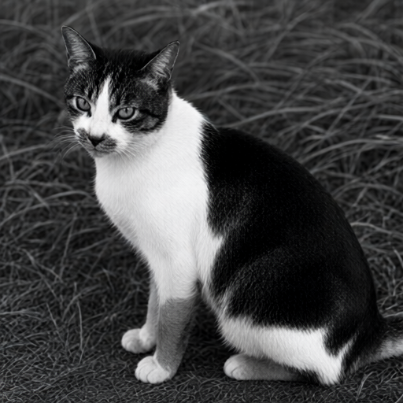
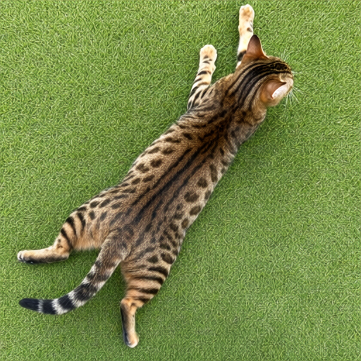
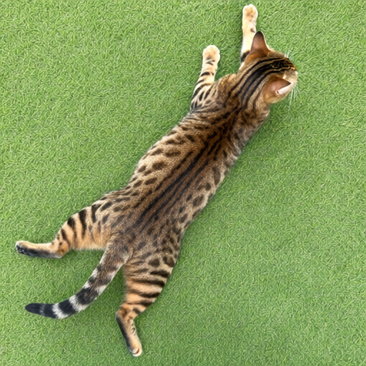
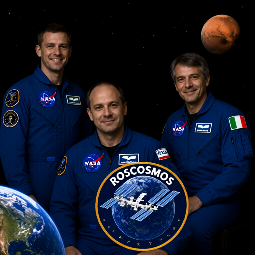
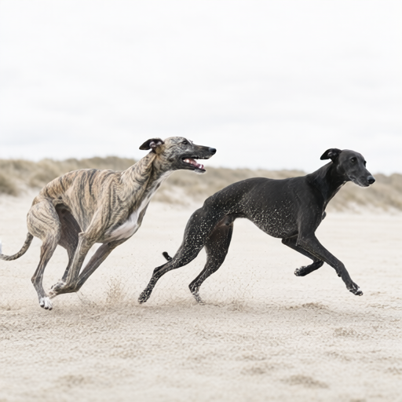
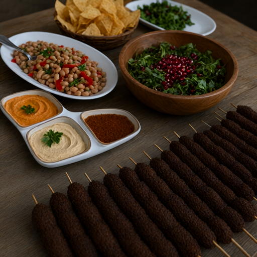
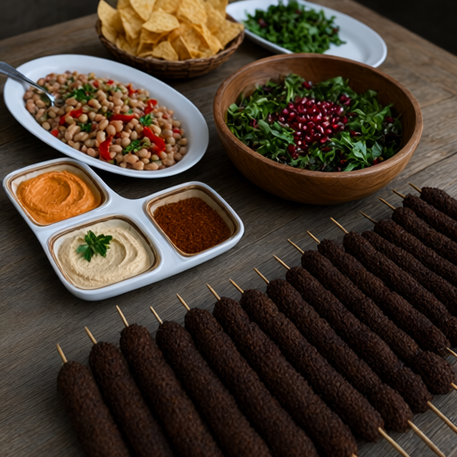

The local vision model received the source image and wrote a detailed gzip-wrapped llmPEG 1.1 artifact, including pixel-measured tone, with temperature 0, seed 42, and /no_think.
Cases marked pass3/7
Mean visual proxy0.647
Mean layout0.669
Mean palette distance0.072
Mean dHash0.498
The local GPU workflow received only rendered text and generated a 512×512 image with seed 42, 30 steps, CFG 3.5, Euler sampling, and the simple scheduler.
Model boundary: the image generator received the rendered text prompt only. It never received the source image or source pixels.
Structural proxy band: moderate. 3/7 cases are marked pass in their checked-in results; mean dHash is 0.498. These structural metrics do not prove identity preservation, so inspect and rate each pair below. With n=7, this is a product probe—not a population estimate.
Current pipeline → closed-loop tone correction: mean visual proxy 0.627 → 0.647 (+0.020). Use the three-way comparisons below to judge identity directly.
CASE qwen-cat-monochrome
PASS
Monochrome cat portrait



Visual proxy0.660
Layout0.665
dHash0.438
Palette distance0.059
Visual proxy change: 0.632 → 0.660 (+0.029)
Measured outcome: Mean luminance, source 125 → current 67 → closed loop 79; colourfulness, source 0 → current 1 → closed loop 1 (Hasler–Süsstrunk). The closed loop rendered again with the negatives: color, colour, tint, sepia, dark, underexposed, dim.
135.8:1 plain artifact ratio · 345,840 → 2,547 bytes · written by llmpeg/0.8.0 · 249.2:1 gzip stored ratio · 1,388 bytes on disk
What the vision model extracted — the artifact as JSON
Stored gzip-compressed: 1,388 bytes on disk. Shown here unpacked and indented for reading; the file holds 2,547 bytes of compact canonical JSON, and gunzip gives back exactly those bytes.
{
"profile": "detailed",
"source": {
"width": 1491,
"height": 1510,
"byte_size": 345840,
"media_type": "image/jpeg",
"sha256": "14c2f2f0aed53833348b02dc4382ed50dd679af745aa6c816b99a31970636196"
},
"summary": "A black and white photograph of a single cat sitting on grass.",
"generation_prompt": "Black and white medium shot, eye-level perspective looking down at a seated domestic shorthair cat positioned centrally within the frame. The subject is facing slightly left with its head turned to look back toward the camera lens. Visible features include pointed ears set high on the skull, dark tabby markings over the top of the head contrasting with a white blaze running between the eyes and up the nose bridge. Dark fur covers the cheeks while the muzzle area transitions from grey to white around the mouth. The chest is predominantly white extending down into front paws which are planted forward in an upright sitting posture. A large dark patch extends across the back flank toward the rear legs where lighter tones appear near the hindquarters and tail base. Background consists of out-of-focus vegetation with linear textures suggesting grass blades scattered throughout.",
"critical_text": [],
"composition": [
{
"region": "0% - 100%, 5% - 98%",
"description": "Full frame occupied by seated cat; head occupies upper left quadrant, body extends diagonally toward lower right corner."
},
{
"region": "23% - 47%, 6% - 18%",
"description": "Cat's face showing dark tabby forehead markings above white muzzle area with visible whiskers extending outward from snout region."
},
{
"region": "50% - 98%, 23% - 97%",
"description": "Lower body and legs; front paws positioned forward showing lighter fur tones against darker flank coverage, hindquarters partially obscured by angle of view."
}
],
"palette": [
"#000000",
"#808080",
"#FFFFFF"
],
"style": "medium focal length lens with shallow depth of field creating soft background blur; natural daylight illumination from above casting subtle shadows beneath paws and along body contours.",
"avoid": [
"inferring breed beyond domestic shorthair classification based on visible fur texture",
"speculating emotional state or intent behind gaze direction"
],
"provenance": {
"provider": "ollama",
"model": "qwen3.5:4b",
"seed": 42,
"temperature": 0.0
},
"tone": {
"luminance": 125,
"contrast": 61,
"saturation": 0,
"warmth": 0,
"colourfulness": 0
},
"llmpeg": {
"magic": "llmPEG",
"format_version": "1.2",
"major_brand": "lpg1",
"compatible_brands": [
"lpg1"
],
"encoder": "llmpeg/0.8.0",
"min_reader_version": "0.1.0",
"decoder": "text-to-image model; lossy; non-deterministic; not bundled"
}
}What the stored file looks like — 1,388 bytes of gzip
This is the whole compressed file, byte for byte, as xxd shows it. Nothing else is kept: no pixels, no thumbnail.
00000000 1f 8b 08 00 00 00 00 00 02 ff 6d 56 4d 8f db 36 ..........mVM..6
00000010 10 fd 2b 84 82 a0 17 af 23 7f ae ed 3d 25 6d d3 ..+.....#...=%m.
00000020 4b 0f 3d 14 bd 04 85 41 51 23 89 31 25 2a 24 b5 K.=....AQ#.1%*$.
00000030 ae 37 c8 7f cf 9b a1 9d 38 45 76 81 5d 89 1f f3 .7......8Ev.]...
00000040 f1 de 9b 19 7d 2e 9c eb 47 6a 8b c3 e7 a2 d7 ad ....}...Gj......
00000050 35 c5 81 57 fe fa fd 8f 62 56 34 3e f4 3a 1d 9f 5..W....bV4>.:..
00000060 29 44 eb 07 ec 2c e6 4b 2c f7 fa a3 0f c7 2a e8 )D...,.K,.....*.
00000070 a1 e6 d3 63 bb c0 a2 f1 fd a8 93 ad 1c e5 9d 58 ...c...........X
00000080 1c 3e e4 bd 7f 67 05 0d c6 d7 14 b2 6d 78 7b 53 .>...g......mx{S
00000090 ce 77 f3 92 4d d9 e1 18 48 63 ef ce 4b 39 5f c8 .w..M...Hc..K9_.
000000a0 66 4d b7 5b 89 fe 4b 0f c9 3f 58 84 48 aa c7 aa fM.[..K..?X.H...
000000b0 7b 52 ce c7 78 79 52 83 1f 1e 6a 4a 14 60 cb c6 {R..xyR...jJ.`..
000000c0 64 0d 2f 25 55 4d 43 ed a8 2e be cc 0a fd ec 6d d./%UMC........m
000000d0 cd e1 d8 a1 a1 10 ec d0 aa 2a 10 d5 aa a2 8b 1f .........*......
000000e0 6a 55 fb 9e f8 a2 8a 9d 0f a9 d3 36 28 e3 74 8c jU.........6(.t.
000000f0 b6 b1 06 29 f9 41 55 3a e2 38 1e 9e 6d e4 14 55 ...).AU:.8..m..U
00000100 33 05 c5 41 4d 81 10 68 1c c9 4c 0e 47 61 99 7a 3..AM..h..L.Ga.z
00000110 cf 57 b4 53 31 e9 44 ca 07 65 87 44 03 22 a2 ce .W.S1.D..e.D."..
00000120 c2 5b ab 5f 48 d5 36 90 e1 73 8c 0e 43 e7 a3 95 .[._H.6..s..C...
00000130 d7 c3 87 cf c8 3b 9a 60 c7 fc 5e bc 9f 9c 53 4d .....;.`..^...SM
00000140 d0 3d 6c 19 33 8d 96 03 bf a8 48 b0 5e 2b 04 f8 .=l.3.....H.^+..
00000150 a4 3a 20 78 db 8c 6a 1a 47 0a ca 51 93 d4 a7 49 .: x..j.G..Q...I
00000160 d7 20 23 cd 54 e5 eb 8b 42 c0 04 66 e0 5d b7 1c . #.T...B..f.]..
00000170 a2 bb a8 e4 cf 3a d4 c0 f2 8c 3b c1 b6 5d 52 c6 .....:....;..]R.
00000180 87 81 c2 1c 79 05 6a af 8c bc 56 0f 6a 51 96 af ....y.j...V.jQ..
00000190 67 6a c3 8f fb dd 6b 00 fb ff 48 7f d5 e9 97 a8 gj....k...H.....
000001a0 1a 6d 88 91 3c 33 1a b5 0e 27 95 74 85 80 21 26 .m..<3...'.t..!&
000001b0 92 40 7b ac 61 2f 2a 5d f9 67 52 e7 ce 02 a6 7e .@{.a/*].gR....~
000001c0 7a 79 01 ae 1a 62 50 67 9b ba 6f 48 63 3b 9e 20 zy...bPg..oHc;.
000001d0 8d 6b f0 6c d4 4f 49 82 6e 82 ef 55 1c f0 aa 72 .k.l.OI.n..U...r
000001e0 a4 3f c4 bc 5c 71 a4 eb 47 c4 bc 95 f0 7f 1a f3 .?..\q..G.......
000001f0 9f 92 b8 a0 03 d1 02 b5 36 3e b1 61 f0 35 ea 73 ........6>.a.5.s
00000200 54 37 62 00 35 12 10 b7 b7 dc 1c a3 85 cb a2 05 T7b.5...........
00000210 9c 40 42 ad b6 43 4c 92 35 6f 38 3d 9c 00 27 94 .@B..CL.5o8=..'.
00000220 0d d9 ce 14 d3 0f 46 42 e2 74 46 fc b7 42 81 af ......FB.tF..B..
00000230 a2 81 8e 84 55 3d b4 c8 d9 37 48 9f ce 3f a4 b3 ....U=...7H..?..
00000240 29 af c0 cf 54 ce 6c ff 88 7c 58 3d 01 01 1a ed )...T.l..|X=....
00000250 8e ac 47 e8 07 4b 2d 81 40 51 ee 71 04 46 23 96 ..G..K-.@Q.q.F#.
00000260 8b 77 4e 9b 93 e4 78 05 9c 6a 3b f5 9c 0c d4 41 .wN...x..j;....A
00000270 17 7a 70 f4 4c 4e 41 3a ac e6 64 c1 8c f3 fe 24 .zp.LNA:..d....$
00000280 24 fa f3 a0 74 52 fa 26 ba 9f 15 0c f6 ef b0 32 $...tR.&.......2
00000290 10 7c 90 ec 98 4c 3b a8 d4 51 16 f1 5c fd 8d c7 .|...L;..Q..\...
000002a0 38 55 1f e1 45 59 d1 0b 3b 89 02 27 2e 88 70 45 8U..EY..;..'..pE
000002b0 02 36 c5 2c 6d 94 19 1b 4d 5e 42 42 35 22 93 ab .6.,m...M^BB5"..
000002c0 70 d9 ae 81 d9 a0 71 71 88 73 f5 cf ad 42 11 2a p.....qq.s...B.*
000002d0 50 8d a8 3e e3 a6 9a 10 1d d7 61 ad 48 03 fd 48 P..>......a.H..H
000002e0 09 74 b4 1d d7 34 9b 88 27 54 d9 ec 5e ae df 54 .t...4..'T..^..T
000002f0 ca f4 c9 99 e4 47 66 86 1f 25 2a e3 39 c7 28 55 .....Gf..%*.9.(U
00000300 2f f1 ea 2b b4 95 e3 12 0f d3 30 48 ab a1 74 26 /..+......0H..t&
00000310 ca 6e 80 73 14 0e a6 51 de 07 1f 71 3c d8 ba 05 .n.s...Q...q<...
00000320 2e bf b1 73 16 93 28 26 e6 d4 3a a2 53 64 bb 48 ...s..(&..:.Sd.H
00000330 89 17 ee eb 04 de 87 8c 78 cc b5 d0 06 e2 8a be ........x.......
00000340 86 a1 83 47 0f cc b7 50 23 5d 46 1e 16 a3 e0 3e ...G...P#]F....>
00000350 42 72 1e 3d 13 ed 81 69 92 2b df 6b 4c 38 07 60 Br.=...i.+.kL8.`
00000360 fe be 18 70 c8 74 ec 5b 8d 90 76 ba ab 09 30 ac ...p.t.[..v...0.
00000370 07 64 95 3b 08 82 12 54 20 08 e6 60 ae de 2a a7 .d.;...T ..`..*.
00000380 03 3a b7 e0 8b 31 01 2b b7 5e a4 4d 40 1f 97 28 .:...1.+.^.M@..(
00000390 85 d7 5c 34 77 ec 22 d3 20 75 09 f7 04 d7 b7 b2 ..\4w.". u......
000003a0 bb 96 1c 9a 1d f6 07 fe 23 cc dc d7 18 23 9d b4 ........#....#..
000003b0 75 d2 bf e7 ea 1d ec b7 19 14 70 17 31 2c 22 13 u.........p.1,".
000003c0 0a 6c 1e 7c f3 d0 78 33 45 f5 4c 2d a5 dc f4 85 .l.|..x3E.L-....
000003d0 53 67 b3 e9 dc eb 21 9c a9 6d 29 73 de 82 fc c8 Sg....!..m)s....
000003e0 64 d7 bc 8e 02 80 4f 56 69 07 17 6d 07 ab 5c bf d.....OVi..m..\.
000003f0 a3 76 84 0d 9e 3e af 4a f9 c1 e2 ab 5d c9 bf fc .v...>.J....]...
00000400 f4 5e 7e 78 0a a0 52 1b b0 8c 52 c5 34 43 d0 98 .^~x..R...R.4C..
00000410 5d b2 f8 4c a0 c8 90 0c 68 1e 7c 38 f0 e9 4c c3 ]..L....h.|8..L.
00000420 6a be 39 ac ab eb 11 9b c7 a4 77 4e f7 9a 07 12 j.9.......wN....
00000430 a6 5b 71 58 2f 67 98 9c 98 b7 41 4a a1 38 94 f3 .[qX/g....AJ.8..
00000440 12 e3 30 fa 29 64 7b d5 25 d1 31 da 17 bc ac d6 ..0.)d{.%.1.....
00000450 9b dd ba 9c 15 1d 31 bc c5 61 b1 59 e0 8d 9b 84 ......1..a.Y....
00000460 3e a6 cb c8 61 c9 f0 7d f3 91 3f 16 60 a4 d3 cb >...a..}..?.`...
00000470 cd 96 3f 09 d6 66 d9 2c 9b 52 53 bd 59 ed 56 ab ..?..f.,.RS.Y.V.
00000480 d5 7a 57 95 cb da ac 57 bb 25 96 ca ba de 3e ee .zW....W.%....>.
00000490 75 f3 b8 de 68 bd 35 bb c5 b6 da ef f5 6a b1 7f u...h.5......j..
000004a0 2c b7 ab ed 62 bf 85 ad b3 ad 53 07 97 eb fd 82 ,...b.....S.....
000004b0 c3 4b 17 41 e1 da a0 40 0b 66 29 6a bb 65 36 50 .K.A...@.f)j.e6P
000004c0 e2 99 17 f8 77 18 5a aa a6 11 6f 60 b1 b1 e4 c0 ....w.Z...o`....
000004d0 2b d4 22 e4 44 8f 2e 52 7d 27 bc 72 53 c0 87 01 +.".D..R}'.rS...
000004e0 03 01 73 b5 be 88 8c 94 75 6e e2 1a 10 c2 a5 86 ..s.....un......
000004f0 f2 50 32 d7 ba 46 9f 4a 8e c7 99 46 41 80 6c 34 .P2..F.J...FA.l4
00000500 56 0d 7f 52 0d ac 2e ed 3c 97 38 8f 0f 6e 07 40 V..R....<.8..n.@
00000510 36 32 eb 71 ea d1 3f 2e c8 e2 2d 0b e4 87 c6 3b 62.q..?...-....;
00000520 a2 e3 7a 68 67 94 b0 d1 53 ad f4 7c 6e a0 b7 ba ..zhg...S..|n...
00000530 41 2c 22 2e 36 c5 32 67 ae 8c 77 b0 de 4c 0e aa A,".6.2g..w..L..
00000540 c7 b7 55 c9 9f 0d b9 ff 14 87 ed 62 56 e4 3c 44 ..U........bV.<D
00000550 28 8b e5 06 21 48 aa 79 ca e1 30 ca a9 67 90 cb (...!H.y..0..g..
00000560 2f 5f be 02 92 18 e4 6b f3 09 00 00 /_.....k....Prompt and machine-readable result
Create a new image from this semantic description. Primary request: Black and white medium shot, eye-level perspective looking down at a seated domestic shorthair cat positioned centrally within the frame. The subject is facing slightly left with its head turned to look back toward the camera lens. Visible features include pointed ears set high on the skull, dark tabby markings over the top of the head contrasting with a white blaze running between the eyes and up the nose bridge. Dark fur covers the cheeks while the muzzle area transitions from grey to white around the mouth. The chest is predominantly white extending down into front paws which are planted forward in an upright sitting posture. A large dark patch extends across the back flank toward the rear legs where lighter tones appear near the hindquarters and tail base. Background consists of out-of-focus vegetation with linear textures suggesting grass blades scattered throughout. Fidelity goal: Maximize resemblance to this specifically described subject. Prioritize distinctive markings, proportions, pose landmarks, crop, and object geometry over generic beauty or creative interpretation. Style/medium: medium focal length lens with shallow depth of field creating soft background blur; natural daylight illumination from above casting subtle shadows beneath paws and along body contours. Canvas: 1491x1510 (0.987:1) Composition: - 0% - 100%, 5% - 98%: Full frame occupied by seated cat; head occupies upper left quadrant, body extends diagonally toward lower right corner. - 23% - 47%, 6% - 18%: Cat's face showing dark tabby forehead markings above white muzzle area with visible whiskers extending outward from snout region. - 50% - 98%, 23% - 97%: Lower body and legs; front paws positioned forward showing lighter fur tones against darker flank coverage, hindquarters partially obscured by angle of view. Palette: #000000, #808080, #FFFFFF Tone: mid-tone exposure (mean luminance 125/255), moderate contrast (spread 61/255), strictly black-and-white grayscale with no colour or tint at all (mean saturation 0/255). Match this grading exactly: do not brighten, add contrast, boost saturation, or apply HDR, glow, or cinematic colour grading. Text to render verbatim when possible: - none Constraints: preserve every described landmark, hierarchy, and spatial relationship; add no unlisted subject, object, marking, or decoration. This is a semantic reconstruction, not the original. Avoid: inferring breed beyond domestic shorthair classification based on visible fur texture, speculating emotional state or intent behind gaze direction; extra logos; watermarks; invented claims.
Your assessment
Source: Barmanru · Public domain dedication · reconstruction generated from text only
{kind=link}
{kind=link}
CASE qwen-cat-on-keyboard
INCOMPLETE
Kitten sleeping on a keyboard

Visual proxy0.674
Layout0.659
dHash0.484
Palette distance0.083
Visual proxy change: 0.667 → 0.674 (+0.008)
Measured outcome: Mean luminance, source 148 → current 111 → closed loop 121; colourfulness, source 32 → current 31 → closed loop 24 (Hasler–Süsstrunk). The closed loop rendered again with the negatives: dark, underexposed, dim, flat, hazy, low contrast, warm color cast, orange tint, yellow tint.
264.1:1 plain artifact ratio · 612,448 → 2,319 bytes · written by llmpeg/0.8.0 · 475.9:1 gzip stored ratio · 1,287 bytes on disk
What the vision model extracted — the artifact as JSON
Stored gzip-compressed: 1,287 bytes on disk. Shown here unpacked and indented for reading; the file holds 2,319 bytes of compact canonical JSON, and gunzip gives back exactly those bytes.
{
"profile": "detailed",
"source": {
"width": 2048,
"height": 1536,
"byte_size": 612448,
"media_type": "image/jpeg",
"sha256": "41a3d97677844372ed1d1922529713ace76d8baed9b3a8060d4b359cf8f818d0"
},
"summary": "A close-up shot of a sleeping tabby kitten curled up on top of an off-white computer keyboard.",
"generation_prompt": "Close-up, high-angle view looking down at a small brown and grey striped tabby kitten fast asleep. The cat is lying directly across the keys of a beige or light-grey plastic computer keyboard that sits on a wooden desk surface. Its head rests near the bottom-left corner of the frame with its eyes closed in deep sleep. One front paw (white tip) dangles over the key area while another lies flat against the wood to the right.",
"critical_text": [
"\"Esc\"",
"\"Tab\"",
"\"Q\" \"W\" \"E\"",
"\"A\" \"S\" \"D\"",
"\"Z\" (partially obscured)",
"\"X\"",
"\"C\"",
"\"V\"",
"\"B\" (obscured by paw)\",\n \"N\", \"M\", \"K\", \"L\", \";\" , '\"', 'O' ', /P', '[', '\\]', '`'",
"F9, F10, F11, F12 keys visible on the right side of keyboard"
],
"composition": [
{
"region": "45% - 85%, 30% - 70%",
"description": "The main subject: a sleeping kitten with brown and grey tabby stripes, white chest fur, and white paws. Its head is turned slightly to the left side of frame."
},
{
"region": "15% - 92%, 60% - 85%",
"description": "The keyboard: An off-white or beige computer keyboard with standard QWERTY layout. The keys are visible under and around the cat's body."
},
{
"region": "1% - 43%, 2% - 97%",
"description": "Background surface: A light brown wooden desk or table top showing wood grain texture beneath both the keyboard and the kitten."
}
],
"palette": [
"#8B6F5C",
"#D3CFCA",
"#A97E42"
],
"style": "close-up, high-angle shot, natural indoor lighting from above casting soft shadows under the cat's body and head.",
"avoid": [
"inferring breed beyond tabby pattern description",
"speculating on time of day or location context outside visual evidence"
],
"provenance": {
"provider": "ollama",
"model": "qwen3.5:4b",
"seed": 42,
"temperature": 0.0
},
"tone": {
"luminance": 148,
"contrast": 55,
"saturation": 48,
"warmth": -5,
"colourfulness": 32
},
"llmpeg": {
"magic": "llmPEG",
"format_version": "1.2",
"major_brand": "lpg1",
"compatible_brands": [
"lpg1"
],
"encoder": "llmpeg/0.8.0",
"min_reader_version": "0.1.0",
"decoder": "text-to-image model; lossy; non-deterministic; not bundled"
}
}What the stored file looks like — 1,287 bytes of gzip
This is the whole compressed file, byte for byte, as xxd shows it. Nothing else is kept: no pixels, no thumbnail.
00000000 1f 8b 08 00 00 00 00 00 02 ff 6d 56 db 8e db 36 ..........mV...6
00000010 10 fd 95 01 8b 60 13 40 76 2c df ed 3c 6d 36 bb .....`.@v,..<m6.
00000020 45 d1 4b 92 36 68 da c6 81 4b 49 b4 c5 ac 44 aa E.K.6h...KI...D.
00000030 24 b5 ae 1a e4 df 7b 86 92 83 dd 76 fd 20 4a d4 $.....{....v. J.
00000040 68 78 e6 cc 9c 19 7f 16 55 55 37 ea 28 b6 9f 45 hx......UU7.(..E
00000050 2d 8f 3a 17 5b de 79 73 fd ad 48 c4 c1 ba 5a 86 -.:.[.ys..H...Z.
00000060 fd 9d 72 5e 5b 83 37 e9 78 8a ed 5a 7e b2 6e 9f ..r^[.7.x..Z~.n.
00000070 39 69 0a b6 6e 8e 29 36 73 5b 37 32 e8 ac 52 fd 9i..n.)6s[72..R.
00000080 1b 2f b6 1f fa 77 1f 13 a1 4c 6e 0b e5 7a df 38 ./...w...Ln..z.8
00000090 ed f9 64 bc 1e 4f d8 95 36 7b a7 24 de dd 3b 65 ..d..O..6{.$..;e
000000a0 32 4e e3 cb 42 9d bf 0a ea ef 30 0a 76 a4 01 51 2N..B.....0.v..Q
000000b0 51 8d dd ea 05 55 d6 fb ee 05 19 6b 46 85 0a ca Q....U.....kF...
000000c0 c1 97 f6 41 e7 bc 15 28 6b 4d 51 a9 42 7c 49 84 ...A...(kMQ.B|I.
000000d0 bc b3 ba 60 38 da 1c 94 73 da 1c 29 73 4a 15 94 ...`8...s..)sJ..
000000e0 a9 ce 9a 82 82 cc b2 8e 80 1e 4e 0c 15 ca e7 4e ..........N....N
000000f0 37 81 b1 24 c2 37 2a 6f 2b 04 86 8f ac a1 a0 6b 7..$.7*o+......k
00000100 45 f6 40 85 ec c8 3a 40 c8 25 1b 52 6e 0d 63 24 E.@...:@.%.Rn.c$
00000110 db 06 af 0b 45 77 da b7 b2 22 75 87 07 93 2b e6 ....Ew..."u...+.
00000120 80 09 b2 5e 47 bf db 0f 9f c5 fd 73 b6 e2 5d 89 ...^G......s..].
00000130 b8 a4 36 e4 db ec 93 ca c3 96 24 f9 4a a9 86 0f ..6.......$.J...
00000140 be d5 80 66 e8 a4 43 09 e4 f6 64 08 04 d3 d1 a9 ...f..C...d.....
00000150 6e c0 ee 03 3c 29 9f d0 a9 d4 41 51 5e 2a 1f e8 n...<)....AQ^*..
00000160 d0 ba 24 1a f6 9b 8d 3c f9 31 7d 17 3c 95 20 9c ..$....<.1}.<. .
00000170 b4 a7 d0 3a 03 16 7c a5 8f 65 a8 e0 cb 52 00 8c ...:..|..e...R..
00000180 4a 1d 02 c5 28 10 e8 c1 c9 5a 8d 41 84 53 c7 1e J...(....Z.A.S..
00000190 e9 7c f1 84 46 b4 5e 3c 49 68 36 e1 db d5 e4 09 .|..F.^<Ih6.....
000001a0 58 7e 2c a0 5b d5 65 56 ba 62 4b 97 06 ce 0e a3 X~,.[.eV.bK.....
000001b0 1e 09 88 cb 94 46 22 99 92 16 a4 7f 35 ec 43 f4 .....F".....5.C.
000001c0 01 a8 f9 e9 ed fb eb 9f df fd 4e 95 ec c0 eb 98 ..........N.....
000001d0 06 97 9e a4 8b 0c 73 b1 11 d2 0c 07 1c a6 74 b6 ......s.......t.
000001e0 e5 6c c2 0a 59 b9 f0 94 d9 a2 7b 00 3d 8d d0 37 .l..Y.....{.=..7
000001f0 53 40 5f 4e 86 28 1e 81 fe 52 e6 b7 c7 de 99 6f S@_N.(...R.....o
00000200 dd 41 e6 0a 01 50 64 69 a0 ff 64 51 82 b1 54 6e .A...Pdi..dQ..Tn
00000210 39 1a 24 01 48 82 6d c8 97 f6 c4 19 63 03 24 88 9.$.H.m.....c.$.
00000220 13 ca 75 d1 02 70 a6 8c 92 9c 40 8b 4b b8 c7 4e ..u..p....@.K..N
00000230 04 1f 37 62 9a 1f 22 66 94 f3 19 00 4f 23 f4 15 ..7b.."f....O#..
00000240 f0 72 2d 39 d4 51 2e ab 3d 3b e7 ca de 89 6b 9f .r-9.Q..=;....k.
00000250 ef 04 3e dd 89 77 32 1b ee de ee 04 ed c4 fb 78 ..>..w2........x
00000260 bd 1e f6 2e e3 d3 2f f1 fa 6a d8 fb 03 4f 4f 1b ....../..j...OO.
00000270 e9 82 96 15 ea c0 66 3e 07 e2 e2 59 7c f9 db 60 ......f>...Y|..`
00000280 74 35 ac bf 0e eb 4b fe e8 6c 4a 51 40 a7 67 3b t5....K..lJQ@.g;
00000290 91 ec 0c e1 b7 13 3f e1 1e cb 8f fd f2 7d bf fc ......?......}..
000002a0 d0 2f 2f f0 6d 42 17 3b 71 81 eb eb 0b c2 f2 fc .//.mB.;q.......
000002b0 0d df 7f e0 cb 6e f7 91 97 3f 2f 70 ce cd 26 a1 .....n...?/p..&.
000002c0 9b 74 c2 97 94 2f d3 be 02 ce d9 67 49 82 39 17 .t.../.....gI.9.
000002d0 73 73 ae d9 33 b1 ac ba 23 58 77 51 a3 fb c6 a1 ss..3...#XwQ....
000002e0 dc c0 96 b8 42 e7 50 a3 b6 49 a8 c4 77 23 69 8e ....B.P..I..w#i.
000002f0 15 d7 93 3a 41 cf f6 96 d3 57 44 8d 05 d6 60 0d ...:A....WD...`.
00000300 4a fe 2b ba 5e 6e e7 c6 31 a8 f3 20 a1 39 19 35 J.+.^n..1.. .9.5
00000310 db 97 2a 8a 90 55 56 75 d1 a3 76 50 35 c8 95 b9 ..*..UVu..vP5...
00000320 43 df 3a 17 80 67 bc 72 90 03 37 14 0e 64 14 0f C.:..g.r..7..d..
00000330 69 2a c9 dd ec 11 91 84 52 72 b0 50 32 c2 97 0f i*......Rr.P2...
00000340 8a 71 a8 d7 7b 3a 77 68 05 9e 50 7a 2e 9e 89 ea .q..{:wh..Pz....
00000350 0b b6 1e 45 8d e7 16 fa 77 8c 80 df 44 a5 f7 02 ...E....w...D...
00000360 64 d7 aa 53 9e 72 66 0a bd 82 bd ab 86 86 e0 5e d..S.rf........^
00000370 1b b6 46 c7 e3 94 d3 d3 5e d4 41 37 cf d0 16 99 ..F.....^.A7....
00000380 4b e0 42 33 3f 87 c8 6a 95 dc 83 40 b2 44 67 2e K.B3?..j...@.Dg.
00000390 15 87 09 a3 43 c5 0c 1f a1 11 10 c7 c6 51 34 43 ....C........Q4C
000003a0 13 8a 19 65 29 34 b2 52 e0 97 8b fc 9b f5 cb e5 ...e)4.R........
000003b0 cd e2 0a 9b df bc 9a 5d dd 5c 5d f2 dd e5 66 75 .......].\]...fu
000003c0 3d 9f 72 aa 91 df 03 0e 41 82 31 0e a4 e6 e6 1f =.r.....A.1.....
000003d0 37 ef 94 91 dc 83 79 c2 f1 e4 80 c1 5f 27 65 66 7.....y....._'ef
000003e0 e3 c5 76 9e 0d 26 ba 9f 33 b6 aa 64 2d b9 ed 63 ..v..&..3..d-..c
000003f0 3c 88 ed 7c 9a 60 f4 60 60 a1 82 50 e5 62 3b 19 <..|.`.``..P.b;.
00000400 4f 30 4f bc 6d 5d ef 2f eb 82 da 7b fd 0f 1e 96 O0O.m]./...{....
00000410 e9 74 3e 5f 27 a2 54 8c 5c 6c d3 c5 6c 89 f9 a6 .t>_'.T.\l..l...
00000420 0a 2d f7 a1 6b 18 56 9c 5e cf 3f f1 b4 85 93 52 .-..k.V.^.?....R
00000430 4e 17 4b ee a7 a9 9c 15 9b d5 72 b5 5a cf e7 b3 N.K.......r.Z...
00000440 d5 54 15 69 91 6e a6 d3 c5 74 b3 4a 67 48 e6 6a .T.i.n...t.JgH.j
00000450 59 ac 33 a9 8a 4d 36 93 eb c9 72 52 cc b3 d9 62 Y.3..M6...rR...b
00000460 93 1f d6 87 75 ba 2e 78 50 9e 74 11 4a b1 9d 4e ....u..xP.t.J..N
00000470 e6 6b 86 17 ba c8 42 fe 58 99 a3 41 85 84 0c c7 .k....B.X..A....
00000480 83 f9 a4 4d 61 cf 55 c7 55 8a ac d6 24 33 50 86 ...Ma.U.U...$3P.
00000490 ea f5 71 cb 5b 9e 06 a5 84 24 fc d0 6c 1f 76 d8 ..q.[....$..l.v.
000004a0 28 0b 2e 35 ce 96 6f eb 5a ba 0e a7 5f d2 f9 fc (..5..o.Z..._...
000004b0 78 66 5f e7 5f 27 da 03 e5 a0 83 20 59 04 4b 96 xf_._'..... Y.K.
000004c0 33 ba 28 db de 1f 18 ff 93 00 1f 15 ac 89 39 c8 3.(...........9.
000004d0 6d 85 7c 1c da ca 28 8f 3f 1d b3 29 8f 5a 13 1c m.|...(.?..).Z..
000004e0 f0 8b ed 62 91 88 aa c5 3f 83 be 02 52 ce 90 8f ...b....?...R...
000004f0 c1 f7 bd 9e 9f 4f d2 d5 4c df 68 f1 e5 cb bf 86 .....O..L.h.....
00000500 b2 03 17 0f 09 00 00 .......Prompt and machine-readable result
Create a new image from this semantic description. Primary request: Close-up, high-angle view looking down at a small brown and grey striped tabby kitten fast asleep. The cat is lying directly across the keys of a beige or light-grey plastic computer keyboard that sits on a wooden desk surface. Its head rests near the bottom-left corner of the frame with its eyes closed in deep sleep. One front paw (white tip) dangles over the key area while another lies flat against the wood to the right. Fidelity goal: Maximize resemblance to this specifically described subject. Prioritize distinctive markings, proportions, pose landmarks, crop, and object geometry over generic beauty or creative interpretation. Style/medium: close-up, high-angle shot, natural indoor lighting from above casting soft shadows under the cat's body and head. Canvas: 2048x1536 (1.333:1) Composition: - 45% - 85%, 30% - 70%: The main subject: a sleeping kitten with brown and grey tabby stripes, white chest fur, and white paws. Its head is turned slightly to the left side of frame. - 15% - 92%, 60% - 85%: The keyboard: An off-white or beige computer keyboard with standard QWERTY layout. The keys are visible under and around the cat's body. - 1% - 43%, 2% - 97%: Background surface: A light brown wooden desk or table top showing wood grain texture beneath both the keyboard and the kitten. Palette: #8B6F5C, #D3CFCA, #A97E42 Tone: mid-tone exposure (mean luminance 148/255), moderate contrast (spread 55/255), natural, moderate colour with a neutral white balance (mean saturation 48/255). Match this grading exactly: do not brighten, add contrast, boost saturation, or apply HDR, glow, or cinematic colour grading. Text to render verbatim when possible: - "\"Esc\"" - "\"Tab\"" - "\"Q\" \"W\" \"E\"" - "\"A\" \"S\" \"D\"" - "\"Z\" (partially obscured)" - "\"X\"" - "\"C\"" - "\"V\"" - "\"B\" (obscured by paw)\",\n \"N\", \"M\", \"K\", \"L\", \";\" , '\"', 'O' ', /P', '[', '\\]', '`'" - "F9, F10, F11, F12 keys visible on the right side of keyboard" Constraints: preserve every described landmark, hierarchy, and spatial relationship; add no unlisted subject, object, marking, or decoration. This is a semantic reconstruction, not the original. Avoid: inferring breed beyond tabby pattern description, speculating on time of day or location context outside visual evidence; extra logos; watermarks; invented claims.
Your assessment
Source: Remedios44 · Public domain dedication · reconstruction generated from text only
{kind=link}
{kind=link}
CASE qwen-cat-on-grass
PASS
Cat stretched on grass



Visual proxy0.643
Layout0.665
dHash0.500
Palette distance0.056
Visual proxy change: 0.570 → 0.643 (+0.074)
Measured outcome: Mean luminance, source 158 → current 124 → closed loop 140; colourfulness, source 41 → current 43 → closed loop 44 (Hasler–Süsstrunk). The closed loop rendered again with the negatives: dark, underexposed, dim, harsh contrast, deep black shadows.
276.4:1 plain artifact ratio · 799,983 → 2,894 bytes · written by llmpeg/0.8.0 · 517.8:1 gzip stored ratio · 1,545 bytes on disk
What the vision model extracted — the artifact as JSON
Stored gzip-compressed: 1,545 bytes on disk. Shown here unpacked and indented for reading; the file holds 2,894 bytes of compact canonical JSON, and gunzip gives back exactly those bytes.
{
"profile": "detailed",
"source": {
"width": 1536,
"height": 1024,
"byte_size": 799983,
"media_type": "image/jpeg",
"sha256": "85d6ccbd42f749242caaf3fb1eb1782660f38353a48300be4ed345ea6d756b5e"
},
"summary": "A single tabby cat lies on its back in an extended pose on a patch of green grass.",
"generation_prompt": "Top-down view of one brown and black striped domestic shorthair cat lying supine on short, bright green grass. The cat is fully stretched out with limbs splayed: front paws raised high near the head, hind legs extended straight back, tail fanned slightly to the left side. Fur pattern consists of dark chocolate-brown M-shaped markings along the spine and lighter tan underbelly; whiskers are visible extending from muzzle.",
"critical_text": [],
"composition": [
{
"region": "0% - 100%, 25% - 78%",
"description": "Full body of cat oriented diagonally across frame, head near top-right corner facing away from camera toward upper right; spine runs center-left to bottom-center."
},
{
"region": "63%-100%, 25%-45%",
"description": "Cat’s head and neck region showing pointed ears, white muzzle area with visible whiskers extending forward-rightward directionally away from viewer perspective."
},
{
"region": "87%-94%, 31%-60%",
"description": "Front right paw extended upward toward top edge of frame; front left paw slightly lower and more inward positioned relative to body axis."
},
{
"region": "25%-45%, 31%-78%",
"description": "Cat’s torso displaying longitudinal dark brown stripes over lighter tan fur texture running parallel to spine line from neck down toward hindquarters."
},
{
"region": "0% - 63%, 31%-94%",
"description": "Hind legs and tail region with extended back paws splayed outward; striped pattern continues along lower body into tail which fans slightly leftward near bottom-left quadrant."
},
{
"region": "0% - 100%, 78%-94%",
"description": "Background consisting of uniformly cut green grass with minor variations in shade due to lighting; no other objects or subjects present within frame boundaries."
}
],
"palette": [
"#5C9E62",
"#A07B3F",
"#4D381E"
],
"style": "medium, top-down camera viewpoint at approximately eye level with subject; natural daylight illumination from above creating soft shadows beneath limbs and body; shallow depth of field blurring grass texture slightly around edges while keeping cat sharply focused.",
"avoid": [
"inferring breed beyond visible tabby markings",
"speculating on emotional state or intent behind pose",
"adding environmental context not clearly depicted (e.g., garden, park)"
],
"provenance": {
"provider": "ollama",
"model": "qwen3.5:4b",
"seed": 42,
"temperature": 0.0
},
"tone": {
"luminance": 158,
"contrast": 24,
"saturation": 89,
"warmth": 51,
"colourfulness": 41
},
"llmpeg": {
"magic": "llmPEG",
"format_version": "1.2",
"major_brand": "lpg1",
"compatible_brands": [
"lpg1"
],
"encoder": "llmpeg/0.8.0",
"min_reader_version": "0.1.0",
"decoder": "text-to-image model; lossy; non-deterministic; not bundled"
}
}What the stored file looks like — 1,545 bytes of gzip
This is the whole compressed file, byte for byte, as xxd shows it. Nothing else is kept: no pixels, no thumbnail.
00000000 1f 8b 08 00 00 00 00 00 02 ff 7d 56 cb 8e 1b 37 ..........}V...7
00000010 10 fc 15 62 8c 05 12 40 92 f5 5e ad f6 64 3b de ...b...@..^..d;.
00000020 e4 12 20 07 df 8c 60 c1 99 69 cd d0 cb 21 c7 24 .. ...`..i...!.$
00000030 47 b2 6c 2c 90 df c8 ef e5 4b 52 dd 9c 95 d7 89 G.l,.....KR.....
00000040 93 8b 1e 7c 34 ab ab ab 8b fc 52 58 db f5 d4 14 ...|4.....RX....
00000050 fb 2f 45 a7 1b 53 15 7b 1e f9 ed ed cf c5 a4 38 ./E..S.{.......8
00000060 f8 d0 e9 74 7f a4 10 8d 77 98 59 cc 96 18 ee f4 ...t....w.Y.....
00000070 07 1f ee cb a0 5d cd ab fb 66 81 c1 ca 77 bd 4e .....]...f...w.N
00000080 a6 b4 94 67 62 b1 7f 9f e7 7e 9f 14 e4 2a 5f 53 ...gb....~...*_S
00000090 c8 b1 71 da cb f9 6c 37 9b 73 28 e3 ee 03 69 cc ..q...l7.s(...i.
000000a0 3d 3b 65 3e 5b c8 64 4d 4f bb 12 7d 4a d3 e4 a7 =;e>[.dMO..}J...
000000b0 06 10 49 75 18 b5 b7 ca fa 18 cf b7 ca 79 37 ad ..Iu.........y7.
000000c0 29 51 40 2c 13 93 a9 78 28 a9 72 70 b5 a5 ba 78 )Q@,...x(.rp...x
000000d0 9c 14 fa e8 4d cd 70 8c 3b 50 08 c6 35 aa 0c 44 ....M.p.;P..5..D
000000e0 b5 2a e9 ec 5d ad 8e 26 32 6e 95 74 59 9e 55 a7 .*..]..&2n.tY.U.
000000f0 c3 03 96 44 00 88 3d 55 83 45 56 d8 e1 9d a2 ce ...D..=U.EV.....
00000100 27 20 d4 56 c5 a4 13 29 1f 94 71 89 1c 0e a3 d6 ' .V...)..q.....
00000110 20 50 ef 23 61 9b ae 6b de 41 ee 68 82 77 1d 16 P.#a..k.A.h.w..
00000120 60 4b e5 1d 67 21 d8 2a 4b 3a d8 b3 aa a9 37 55 `K..g!.*K:....7U
00000130 02 90 1f 68 d6 cc 26 aa d1 a1 26 37 51 3d 20 fc ...h..&...&7Q= .
00000140 c8 bc 31 a9 3e 9a 24 bc bc ff 02 46 62 15 4c 9f ..1.>.$....Fb.L.
00000150 ff 17 77 83 b5 aa f4 f5 59 f9 83 aa 74 02 20 83 ..w.....Y...t. .
00000160 c3 10 af 36 ba 61 a0 38 43 57 01 3c a9 43 d0 1d ...6.a.8CW.<.C..
00000170 4d 54 0b ae 95 c3 e9 2a f9 7e 1a 4c d3 02 8d 0f MT.....*.~.L....
00000180 8e 82 3a e8 8a 51 eb 93 3e 63 b5 ef 10 b1 a3 a0 ..:..Q..>c......
00000190 b1 f0 04 58 6a e8 7b 2c 92 1d b7 2a f6 c6 91 0a ...Xj.{,...*....
000001a0 83 8b aa e2 13 c3 d4 d2 21 61 29 e0 a4 e4 bb 69 ........!a)....i
000001b0 1e 9d 81 8c 40 cd 58 d5 2b 35 55 8b f9 fc 6a a2 ....@.X.+5U...j.
000001c0 96 1b fe 7d bd bb 42 75 fe 99 d4 1b 9d fe fa e3 ...}..Bu........
000001d0 cf 98 91 42 47 40 5b 3d a8 1c 45 c5 d6 9f 18 64 ...BG@[=..E....d
000001e0 ef 8d e4 89 44 e2 44 9d 5a 83 6a 74 c3 e7 cf 28 ....D.D.Z.jt...(
000001f0 a2 86 9c d4 c9 a4 f6 52 56 4c c7 07 88 4b 81 7e .......RVL...K.~
00000200 72 52 1a 08 9b 93 ca 04 48 7a b5 09 54 e5 ea 32 rR......Hz..T..2
00000210 69 17 12 8e 86 4e c8 1b b9 b3 18 92 39 d2 37 49 i....N......9.7I
00000220 6d 57 57 d3 4b 4e d3 f5 e6 7b 19 dd 41 04 29 33 mWW.KN...{..A.)3
00000230 87 ca 9e 46 18 c4 94 ca d1 23 c1 28 88 a2 1a f2 ...F.....#.(....
00000240 46 31 a5 5a b7 8c 00 3b 85 5a de 18 2d c7 00 3c F1.Z...;.Z..-..<
00000250 eb 19 13 93 d3 f9 40 10 a1 04 78 52 0a 22 07 62 ......@...xR.".b
00000260 d5 1e 29 57 04 02 d1 9f 4c fc 06 f8 ee fa 6a 7a ..)W....L.....jz
00000270 b3 06 ee d5 e2 6a ba 9d ff 5f 25 92 0f d1 83 a0 .....j..._%.....
00000280 d8 5b 7d 66 f6 ac 77 8d 49 03 98 84 ae 6b 68 15 .[}f..w.I....kh.
00000290 ed e4 4f a8 4e c2 66 8a ca a3 95 95 60 c5 77 d2 ..O.N.f.....`.w.
000002a0 4e 1d 06 7c 23 ed 21 88 68 9c 94 50 07 50 4d 96 N..|#.!.h..P.PM.
000002b0 21 66 39 59 fe 10 d2 a5 e4 35 87 1c b9 e1 ee fa !f9Y.....5......
000002c0 38 e8 80 80 df a6 31 b2 9e d3 f8 be a0 7e e1 ce 8.....1......~..
000002d0 b4 d4 44 21 2c 69 63 9f d4 24 2a b9 54 a3 d4 38 ..D!,ic..$*.T..8
000002e0 14 34 47 25 89 62 c4 0f a2 8d db 31 31 30 ac 13 .4G%.b.....110..
000002f0 10 38 e9 65 e3 06 a4 aa 99 8b b1 1e 42 34 74 e9 .8.e........B4t.
00000300 f3 21 90 5d d5 a2 ab d0 23 5f 0b 87 52 4a 42 d2 .!.]....#_..RJB.
00000310 82 63 af 48 7d 91 5d 0d db 4c ff 6e 19 48 2c a7 .c.H}.]..L.n.H,.
00000320 87 72 7d 27 bd d7 80 dd 04 0f b7 63 58 91 1d 90 .r}'.......cX...
00000330 dd ea a0 06 67 d8 bf 71 6a 35 24 d5 c0 f0 1c 3e ....g..qj5$....>
00000340 35 bc 40 f2 86 5b c2 bf 8e 3a 18 cd 91 22 90 a3 5.@..[...:..."..
00000350 bd e0 c4 aa 1e 44 37 82 19 b1 d8 4e 95 4f 2d 32 .....D7....N.O-2
00000360 f4 e5 07 f4 40 64 e3 8b c3 f8 bb 0f 14 d9 02 39 ....@d.........9
00000370 28 42 88 72 91 19 f0 20 34 c5 ff b2 00 d4 2a 27 (B.r... 4.....*'
00000380 c4 2e 17 a0 db 4a db 7b d6 08 7c 0e 43 0d c1 92 .....J.{..|.C...
00000390 04 d8 7d 0f 45 f4 18 2e de c1 b1 44 14 dc 93 9c ..}.E......D....
000003a0 21 a4 3e 2a 8f 2b 5b 5a 2e e0 53 a9 6a df 11 5f !.>*.+[Z..S.j.._
000003b0 06 6c 19 21 b5 da 04 71 48 2b 02 8e 83 08 2e 1b .l.!...qH+......
000003c0 4a 48 13 44 91 ee 7c 46 d2 4c bd 6b 49 b6 18 98 JH.D..|F.L.kI...
000003d0 e7 c0 a6 80 d0 94 aa 36 0b 23 93 68 4d 57 5e f4 .......6.#.hMW^.
000003e0 b2 1f fb 55 34 14 b4 89 c4 c2 6d da d1 6f 11 8e ...U4.....m..o..
000003f0 3d 6d 22 62 ce 82 bc 68 0f a1 b5 20 60 11 4e b2 =m"b...h... `.N.
00000400 7e a0 1c 6e e5 8b 76 58 57 88 21 6a 89 a6 a6 99 ~..n..vXW.!j....
00000410 ba 43 5b 3d 93 24 d7 3e 32 2f d2 92 55 eb 2b 0f .C[=.$.>2/..U.+.
00000420 17 a0 69 a6 e8 d7 29 aa cb cc 3c dd 6f a3 76 39 ..i...)...<.o.v9
00000430 66 ee 3f 26 f1 79 d7 a2 84 14 4a 42 ea b7 5f 3d f.?&.y....JB.._=
00000440 14 f6 7a 31 d6 67 7e ca 5d 9b 0d 98 0b de 6b 4b ..z1.g~.].....kK
00000450 80 c5 57 ee 8b cd 9b 9b b7 5b 7e 35 bc 78 35 bf ..W......[~5.x5.
00000460 7e bd ba e3 5f eb 9f 56 bb c5 5b be e0 50 dc 83 ~..._..V..[..P..
00000470 b1 58 09 55 73 d6 b8 b0 65 f0 48 4e bb 8a e4 55 .X.Us...e.HN...U
00000480 c2 b7 3d 16 7c 3c 91 5b cd 36 fb 75 39 2e 31 f9 ..=.|<.[.6.u9.1.
00000490 6d e0 ad d5 9d e6 db 1a 57 7a b1 5f 2f 27 78 2e m.......Wz._/'x.
000004a0 e0 91 01 f9 c0 6f 8a fd 7c 36 c7 1b 20 fa 21 e4 .....o..|6.. .!.
000004b0 78 e5 39 d1 7d 34 9f f1 e7 fa e6 e6 66 b7 9a 14 x.9.}4......f...
000004c0 2d 71 da c5 7e 31 5f ae f1 26 21 5c 9f f7 e9 dc -q..~1_..&!\....
000004d0 33 2c 79 71 bc fc c0 2f 24 04 69 f5 72 b3 65 f7 3,yq.../$.i.r.e.
000004e0 dc d4 db aa 2a eb f5 f2 70 bd be 59 ae 97 95 d6 ....*...p..Y....
000004f0 87 d5 a1 5c 50 b9 b8 de 2d b7 db f9 61 b5 5b 6d ...\P...-...a.[m
00000500 56 7a bd 5b cd e7 25 ad a9 5e ad 37 a4 b7 f5 f5 Vz.[..%..^.7....
00000510 66 5b 6e f8 91 70 32 75 6a 71 e4 66 b5 65 78 e9 f[n..p2ujq.f.ex.
00000520 2c 2c f0 d9 43 37 91 db 59 b4 3e 5e c2 2c 79 b9 ,,..C7..Y.>^.,y.
00000530 f4 14 14 a9 7b a4 ff 09 c8 12 41 17 74 66 51 1c ....{.....A.tfQ.
00000540 e1 a4 22 c9 b1 31 d1 b5 9c bf 18 f4 59 aa aa 8c .."..1......Y...
00000550 b5 03 ba 5e ba 2a 57 4c 97 20 5a 55 b8 31 c5 34 ...^.*WL. ZU.1.4
00000560 a2 67 69 c1 03 3c 04 5c a2 03 f5 45 e2 d2 60 f0 .gi..<.\...E..`.
00000570 b7 5b 9e b7 f0 3b 7e bb 60 96 ef 2a 43 96 bb 6f .[...;~.`..*C..o
00000580 c8 2f ab 6c 31 4f 6e 7f 51 af ce 16 c5 17 5c 64 ./.l1On.Q.....\d
00000590 35 41 3e 0f 84 e7 0f 76 70 93 21 6a e8 b1 ec e0 5A>....vp.!j....
000005a0 ab 01 7d c3 22 8a 43 07 a9 9e 41 ca 2b e8 dd 35 ..}.".C...A.+..5
000005b0 97 07 9a f4 b1 e1 7b c6 29 03 c5 8b 71 1b 36 81 ......{.)...q.6.
000005c0 af 0d c5 2f 31 9e d7 dc 20 95 e0 7c de dc 08 9f .../1... ..|....
000005d0 e0 1e 2c 07 34 09 a4 81 0e 77 14 f1 66 5d 2f f8 ..,.4....w..f]/.
000005e0 d5 e5 d0 8f 11 82 60 39 64 d2 44 8c 8b cd 0e b8 ......`9d.D.....
000005f0 84 d7 ec be bb 1b 14 52 87 8e 2b b9 59 3c 3e fe .......R..+.Y<>.
00000600 0d 63 d3 2c 1b 4e 0b 00 00 .c.,.N...Prompt and machine-readable result
Create a new image from this semantic description. Primary request: Top-down view of one brown and black striped domestic shorthair cat lying supine on short, bright green grass. The cat is fully stretched out with limbs splayed: front paws raised high near the head, hind legs extended straight back, tail fanned slightly to the left side. Fur pattern consists of dark chocolate-brown M-shaped markings along the spine and lighter tan underbelly; whiskers are visible extending from muzzle. Fidelity goal: Maximize resemblance to this specifically described subject. Prioritize distinctive markings, proportions, pose landmarks, crop, and object geometry over generic beauty or creative interpretation. Style/medium: medium, top-down camera viewpoint at approximately eye level with subject; natural daylight illumination from above creating soft shadows beneath limbs and body; shallow depth of field blurring grass texture slightly around edges while keeping cat sharply focused. Canvas: 1536x1024 (1.500:1) Composition: - 0% - 100%, 25% - 78%: Full body of cat oriented diagonally across frame, head near top-right corner facing away from camera toward upper right; spine runs center-left to bottom-center. - 63%-100%, 25%-45%: Cat’s head and neck region showing pointed ears, white muzzle area with visible whiskers extending forward-rightward directionally away from viewer perspective. - 87%-94%, 31%-60%: Front right paw extended upward toward top edge of frame; front left paw slightly lower and more inward positioned relative to body axis. - 25%-45%, 31%-78%: Cat’s torso displaying longitudinal dark brown stripes over lighter tan fur texture running parallel to spine line from neck down toward hindquarters. - 0% - 63%, 31%-94%: Hind legs and tail region with extended back paws splayed outward; striped pattern continues along lower body into tail which fans slightly leftward near bottom-left quadrant. - 0% - 100%, 78%-94%: Background consisting of uniformly cut green grass with minor variations in shade due to lighting; no other objects or subjects present within frame boundaries. Palette: #5C9E62, #A07B3F, #4D381E Tone: bright exposure (mean luminance 158/255), low, soft contrast (spread 24/255), natural, moderate colour with a warm white balance (mean saturation 89/255). Match this grading exactly: do not brighten, add contrast, boost saturation, or apply HDR, glow, or cinematic colour grading. Text to render verbatim when possible: - none Constraints: preserve every described landmark, hierarchy, and spatial relationship; add no unlisted subject, object, marking, or decoration. This is a semantic reconstruction, not the original. Avoid: inferring breed beyond visible tabby markings, speculating on emotional state or intent behind pose, adding environmental context not clearly depicted (e.g., garden, park); extra logos; watermarks; invented claims.
Your assessment
Source: Clavecin · Public domain dedication · reconstruction generated from text only
{kind=link}
{kind=link}
CASE qwen-amsterdam-market
INCOMPLETE
Amsterdam market

Visual proxy0.696
Layout0.668
dHash0.484
Palette distance0.054
Visual proxy change: 0.689 → 0.696 (+0.007)
Measured outcome: Mean luminance, source 89 → current 62 → closed loop 74; colourfulness, source 43 → current 61 → closed loop 62 (Hasler–Süsstrunk). The closed loop rendered again with the negatives: dark, underexposed, dim, vivid colors, saturated colors.
276.8:1 plain artifact ratio · 742,058 → 2,681 bytes · written by llmpeg/0.8.0 · 528.9:1 gzip stored ratio · 1,403 bytes on disk
What the vision model extracted — the artifact as JSON
Stored gzip-compressed: 1,403 bytes on disk. Shown here unpacked and indented for reading; the file holds 2,681 bytes of compact canonical JSON, and gunzip gives back exactly those bytes.
{
"profile": "detailed",
"source": {
"width": 1920,
"height": 1440,
"byte_size": 742058,
"media_type": "image/jpeg",
"sha256": "adbd28e53f0a2e9903dfe620becb9e24b267337eeb3c9b11541c4aeb2926d802"
},
"summary": "A sunlit outdoor market scene on a city street with multiple vendors under awnings and pedestrians walking past stalls displaying fresh produce.",
"generation_prompt": "An eye-level, medium shot of an active outdoor market on a sunny day in front of colorful brick buildings. In the foreground right, a fruit vendor stands behind stacked green plastic crates holding piles of oranges; to his left are yellow crates with limes and lemons. A woman with curly brown hair wearing a dark coat with fur trim faces away from camera near orange crate pile. Mid-ground shows three pedestrians walking toward viewer: woman in olive puffer jacket carrying tan shoulder bag, man in green jacket over plaid shirt holding paper bag, woman in black coat with grey crossbody strap and gloves. Background features rows of market stalls under red/orange/brown awnings; people browsing produce or standing near vendor counters. Distant buildings show varied colors including blue/green/red brick facades with white window frames.",
"critical_text": [
"GOWTU CENTRE",
"JEWELIER",
"Gouda Zilverenid",
"Abt Gouwstraat Nr: 47138 Amsterdam",
"06-5297146",
"ZOOO",
"Sola"
],
"composition": [
{
"region": "0% A-35%, y 20%-60%",
"description": "Foreground pedestrians: woman in olive puffer jacket (left), man in green plaid shirt holding paper bag, woman in black coat with grey strap walking toward camera."
},
{
"region": "48% A-100%, y 52%-96%",
"description": "Foreground fruit stall: vendor behind stacked crates (green/yellow), piles of oranges and citrus fruits, woman in fur-trimmed coat facing away."
},
{
"region": "38% A-100%, y 42%-75%",
"description": "Mid-ground market activity: people browsing stalls under awnings, vendor counters with produce displays visible behind pedestrians."
}
],
"palette": [
"#FF9933",
"#8B4513",
"#2F4F4F",
"#DAA520"
],
"style": "eye-level medium shot, natural daylight with hard shadows cast by awnings and people, shallow depth of field blurring distant background slightly",
"avoid": [
"specific identity misidentification",
"inferred clothing brands or models not visible in image",
"incorrect crate color assignments"
],
"provenance": {
"provider": "ollama",
"model": "qwen3.5:4b",
"seed": 42,
"temperature": 0.0
},
"tone": {
"luminance": 89,
"contrast": 53,
"saturation": 60,
"warmth": 14,
"colourfulness": 43
},
"llmpeg": {
"magic": "llmPEG",
"format_version": "1.2",
"major_brand": "lpg1",
"compatible_brands": [
"lpg1"
],
"encoder": "llmpeg/0.8.0",
"min_reader_version": "0.1.0",
"decoder": "text-to-image model; lossy; non-deterministic; not bundled"
}
}What the stored file looks like — 1,403 bytes of gzip
This is the whole compressed file, byte for byte, as xxd shows it. Nothing else is kept: no pixels, no thumbnail.
00000000 1f 8b 08 00 00 00 00 00 02 ff a5 56 ef 6f db 36 ...........V.o.6
00000010 10 fd 57 08 0d 01 3a c0 76 64 f9 47 62 f7 53 ba ..W...:.vd.Gb.S.
00000020 a6 45 87 ad 19 ba 0e 05 5a 0c 01 25 9e 6c b6 14 .E......Z..%.l..
00000030 a9 91 94 3d ad e8 ff be 77 94 9c 26 e9 b0 7d 18 ...=....w..&..}.
00000040 fc c1 d2 91 3c de bd 7b ef 4e 9f 33 63 9a 96 76 ....<..{.N.3c..v
00000050 d9 f6 73 d6 c8 9d ae b2 2d 5b 7e b9 7e 99 4d b2 ..s.....-[~.~.M.
00000060 da f9 46 c6 db 03 f9 a0 9d c5 ca 7c 56 c0 dc c8 ..F........|V...
00000070 8f ce df 96 5e 5a c5 bb db dd 1c c6 ca 35 ad 8c ....^Z.......5..
00000080 ba 34 34 ac 84 6c fb 61 58 fb 7d 92 91 ad 9c 22 .44..l.aX.}...."
00000090 3f f8 c6 6d e7 f9 ec 72 96 b3 2b 6d 6f 3d 49 ac ?..m...r..+mo=I.
000000a0 dd bb 25 9f cd d3 a2 a2 d3 a9 48 7f c6 69 74 53 ..%.......H..itS
000000b0 8d 10 49 34 b0 9a a7 c2 b8 10 fa a7 c2 3a 3b 55 ..I4.........:;U
000000c0 14 c9 c3 97 0e 51 57 6c 8a a2 ec ac 32 a4 b2 2f .....QWl....2../
000000d0 93 4c 1e 9c 56 1c 4e 68 a9 d2 b5 ae 84 56 64 a3 .L..V.Nh.....Vd.
000000e0 8e bd 68 74 18 9e 61 45 f4 b8 7e 92 69 5b 93 f7 ..ht..aE..~.i[..
000000f0 a4 44 65 5c dc 6b bb 13 43 42 c2 f9 e1 ea 90 2e .De\.k..CB......
00000100 38 e0 28 b2 15 da 8a 14 56 3a 59 39 9c ac a2 a8 8.(.....V:Y9....
00000110 bc 8c 24 2a 67 70 46 86 a0 77 b6 c1 2d 81 b1 60 ..$*gpF..w..-..`
00000120 a0 5c d0 e9 b2 ed 87 cf c8 32 54 5e b7 c3 7b f6 .\.......2T^..{.
00000130 c2 79 da 79 87 e0 45 4b 58 8a 5e 4b 1b b6 e2 e8 .y.y..EKX.^K....
00000140 1a 69 f9 2e 67 f4 81 44 db d5 08 52 7c 94 d5 27 .i..g..D...R|..'
00000150 8a e2 89 a1 3a 7e 3f 11 e3 96 9d 27 b2 a2 35 52 ....:~?....'..5R
00000160 2b 11 f6 da 47 b1 77 46 71 22 ad 6c 71 aa 94 bb +...G.wFq".lq...
00000170 c9 57 87 a5 81 13 84 2a a3 38 ea b8 e7 d3 bd c0 .W.....*.8......
00000180 bd b2 15 47 69 3e f1 b1 e8 8e d2 03 0f d9 90 97 ...Gi>..........
00000190 33 24 8a 18 c7 52 9d 89 ab e9 62 75 36 11 bd 28 3$...R....bu6..(
000001a0 f2 b3 e9 3a 3f 03 e2 ff 92 54 ed 3b 1d e1 5e 1a ...:?....T.;..^.
000001b0 b3 15 07 b2 0a 00 95 04 94 15 1b 91 8d 1a b0 0b ................
000001c0 e2 49 4a e3 bc 27 63 dc 11 c9 b5 da c0 ea 6a 94 .IJ..'c.......j.
000001d0 41 da 1d 1e 51 13 51 e9 e8 bb 30 78 0d f7 92 aa A...Q.Q...0x....
000001e0 3b 3f 05 74 4d c3 fe 38 b5 5a 56 9c 89 3c ca fe ;?.tM..8.ZV..<..
000001f0 41 02 cb 4b ce 60 9e e7 29 85 55 71 36 dd ac ff A..K.`..).Uq6...
00000200 29 85 9f b5 9a 8e 29 34 d2 33 e8 b2 8a fa 00 0e ).....)4.3......
00000210 6d 51 28 d7 82 08 a5 77 c7 c0 97 a4 ec 82 c0 5e mQ(....w.......^
00000220 80 2d 8f 16 36 c4 36 26 5b c1 07 c8 1a 06 b0 5b .-..6.6&[......[
00000230 ef 54 57 91 50 3a a0 5e 7d b8 63 d5 88 c9 3d 0e .TW.P:.^}.c...=.
00000240 3c 08 7b f1 20 ec 25 c2 be 58 21 6c a6 97 07 b5 <.{. .%..X!l....
00000250 2a 69 6e 59 33 4c fa 97 37 ef de fe 26 7e b8 7e *inY3L..7...&~.~
00000260 fd f6 cd 35 5c fc 78 fd ee fa a7 57 d7 6f f0 f8 ...5\.x....W.o..
00000270 d2 75 4a 8a f7 da 40 7a 64 21 91 49 76 55 46 01 .uJ...@zd!.IvUF.
00000280 f3 91 eb 0f d4 5e fb ad 58 5e cc 17 97 e2 aa 09 .....^..X^......
00000290 88 5a c9 06 9b f2 f5 74 55 6c 2e e6 cb 35 5e de .Z.....tUl...5^.
000002a0 df dc dc e0 ef 57 67 24 b3 7b 47 16 1c 61 d0 6e .....Wg$.{G..a.n
000002b0 91 5b d3 22 84 ec ca 0a ea 69 6a e8 40 06 24 25 .[.".....ij.@.$%
000002c0 a5 bb 06 c4 84 86 50 4d d4 2b 21 49 c2 75 51 39 ......PM.+!I.uQ9
000002d0 d6 d8 80 af c3 82 08 9d b5 bd 50 b2 4f 45 f5 ce ..........P.OE..
000002e0 a6 33 49 57 75 67 00 b9 06 77 cb 4e 27 7a 87 99 .3IWug...w.N'z..
000002f0 78 65 45 dc 93 a8 bf 12 ce eb dd 3e 4e e0 6a 60 xeE........>N.j`
00000300 de 58 05 94 88 15 fd 88 79 77 c2 e1 36 72 e2 e1 .X......yw..6r..
00000310 9d 76 1e f1 ef 29 64 21 f6 3a 08 16 9f 90 9e c4 .v...)d!.:......
00000320 40 d5 d3 b9 54 5f a3 9b 91 a9 86 1a 87 22 8a ab @...T_......."..
00000330 91 a4 69 b9 ea bc e9 13 71 ac d8 4b ed c5 91 a4 ..i.....q..K....
00000340 4f 3c 45 ce fe be 2a 41 68 c1 84 66 22 b3 47 f0 O<E...*Ah..f".G.
00000350 98 f1 68 46 51 0a 8b 83 63 64 63 f3 e1 78 67 e2 ..hFQ...cdc..xg.
00000360 1e 6f 81 f8 31 00 1e 24 79 9f 57 8f 55 7e d0 74 .o..1..$y.W.U~.t
00000370 24 ff 1f 1d a7 92 de f7 e9 10 f6 c0 71 67 d4 a9 $...........qg..
00000380 b1 3c 68 42 e3 76 07 86 fd bf 86 54 79 74 fb d2 .<hB.v.....Tyt..
00000390 a9 53 6b 62 48 77 06 7e 01 e9 33 ec 3f b5 17 92 .SkbHw.~..3.?...
000003a0 b1 f3 00 88 b5 c8 c5 1a c9 f4 40 92 e8 ed e7 03 ..........@.....
000003b0 54 e7 03 f4 a3 46 9f 7e a3 e4 93 3c 4f 8c 61 5b T....F.~...<O.a[
000003c0 42 fa 91 98 67 e2 b9 e6 0d f1 2b 17 13 dc e2 80 B...g.....+.....
000003d0 72 a6 16 04 c2 06 24 57 99 2e 39 29 4d 47 e7 43 r.....$W..9)MG.C
000003e0 83 e3 49 33 f0 18 a5 c5 24 1c 99 73 dc 6b 14 f1 ..I3....$..s.k..
000003f0 08 7a c2 4d ed 51 e5 d4 01 5a 69 28 46 62 61 7f .z.M.Q...Zi(Fba.
00000400 f7 e2 c5 66 b3 58 c0 f8 dd e5 b3 e5 6a 9e 9e 8a ...f.X......j...
00000410 17 4b fc f8 e9 f9 d5 d5 aa c8 59 93 c8 a2 06 19 .K........Y.....
00000420 a0 44 cc 49 a9 79 2a 26 23 92 90 b6 a2 34 fa 79 .D.I.y*&#....4.y
00000430 ae 61 c3 1f 47 b2 8b d9 6a bb 2c c7 2d 7a 18 c0 .a..G...j.,.-z..
00000440 ce 18 d9 48 d8 02 e1 f4 76 59 4c 30 93 31 c9 7d ...H....vYL0.1.}
00000450 82 3b db e6 b3 1c 83 36 b8 ce 0f fe ca 3e d2 6d .;.....6.....>.m
00000460 d0 7f e1 e5 62 59 e4 ab cb 49 b6 27 56 62 b6 9d ....bY...I.'Vb..
00000470 2f 97 39 06 3f ba 80 bc 8d 7d cb 61 a5 f9 79 fe /.9.?....}.a..y.
00000480 91 3f 43 e0 64 2f 8b d5 1a 56 a9 4a 55 5c d2 6a .?C.d/...V.JU\.j
00000490 51 e7 b2 a0 cd 26 5f a8 9a d6 45 5e 52 55 6e a8 Q....&_...E^RUn.
000004a0 58 96 c5 fa 62 b1 b8 20 2a 17 d5 a6 9c cf 57 cb X...b.. *.....W.
000004b0 79 b5 94 54 16 9b 62 ad 2e 73 fe 52 39 6a 15 f7 y..T..b..s.R9j..
000004c0 b8 72 53 a4 f0 62 9f 50 b8 6b 46 f7 7b d1 44 58 .rS..b.P.kF.{.DX
000004d0 ce 45 1a ee 36 86 43 1d ea b0 67 4d 20 26 c5 84 .E..6.C...gM &..
000004e0 aa d0 19 44 d9 9f 08 93 58 38 70 66 c2 7b 92 fc ...D....X8pf.{..
000004f0 15 b5 38 06 ea d5 9a 8c e2 4a fb 24 69 75 62 c8 ..8......J.$iub.
00000500 57 b6 86 74 8f e9 39 eb ae 01 55 7b ee 96 dc f4 W..t..9...U{....
00000510 0c 5a d5 a3 7e 18 2a b4 d6 a1 2b 56 fc e9 02 1d .Z..~.*...+V....
00000520 10 8d 41 36 9d 89 9a 99 3b f0 f2 d1 ec 19 c3 fc ..A6....;.......
00000530 56 f1 2d a7 33 4a 63 9c 40 6c ae 21 a0 bb d1 c4 V.-.3Jc.@l.!....
00000540 a4 8b ce a6 aa 32 8d 3b 6e bc 96 02 be ef 96 0b .....2.;n.......
00000550 fe 9a b1 d0 63 40 5d 57 78 33 1d 3e c2 06 4e 5d ....c@]Wx3.>..N]
00000560 6e 90 54 42 74 98 a0 6b 14 1d fd a5 49 f5 58 7e n.TBt..k....I.X~
00000570 f9 f2 37 a7 70 ce 4a 79 0a 00 00 ..7.p.Jy...Prompt and machine-readable result
Create a new image from this semantic description. Primary request: An eye-level, medium shot of an active outdoor market on a sunny day in front of colorful brick buildings. In the foreground right, a fruit vendor stands behind stacked green plastic crates holding piles of oranges; to his left are yellow crates with limes and lemons. A woman with curly brown hair wearing a dark coat with fur trim faces away from camera near orange crate pile. Mid-ground shows three pedestrians walking toward viewer: woman in olive puffer jacket carrying tan shoulder bag, man in green jacket over plaid shirt holding paper bag, woman in black coat with grey crossbody strap and gloves. Background features rows of market stalls under red/orange/brown awnings; people browsing produce or standing near vendor counters. Distant buildings show varied colors including blue/green/red brick facades with white window frames. Fidelity goal: Maximize resemblance to this specifically described subject. Prioritize distinctive markings, proportions, pose landmarks, crop, and object geometry over generic beauty or creative interpretation. Style/medium: eye-level medium shot, natural daylight with hard shadows cast by awnings and people, shallow depth of field blurring distant background slightly Canvas: 1920x1440 (1.333:1) Composition: - 0% A-35%, y 20%-60%: Foreground pedestrians: woman in olive puffer jacket (left), man in green plaid shirt holding paper bag, woman in black coat with grey strap walking toward camera. - 48% A-100%, y 52%-96%: Foreground fruit stall: vendor behind stacked crates (green/yellow), piles of oranges and citrus fruits, woman in fur-trimmed coat facing away. - 38% A-100%, y 42%-75%: Mid-ground market activity: people browsing stalls under awnings, vendor counters with produce displays visible behind pedestrians. Palette: #FF9933, #8B4513, #2F4F4F, #DAA520 Tone: moderately dark exposure (mean luminance 89/255), moderate contrast (spread 53/255), natural, moderate colour with a neutral white balance (mean saturation 60/255). Match this grading exactly: do not brighten, add contrast, boost saturation, or apply HDR, glow, or cinematic colour grading. Text to render verbatim when possible: - "GOWTU CENTRE" - "JEWELIER" - "Gouda Zilverenid" - "Abt Gouwstraat Nr: 47138 Amsterdam" - "06-5297146" - "ZOOO" - "Sola" Constraints: preserve every described landmark, hierarchy, and spatial relationship; add no unlisted subject, object, marking, or decoration. This is a semantic reconstruction, not the original. Avoid: specific identity misidentification, inferred clothing brands or models not visible in image, incorrect crate color assignments; extra logos; watermarks; invented claims.
Your assessment
Source: Fons Heijnsbroek · CC0 1.0 Universal (public domain dedication) · reconstruction generated from text only
CASE qwen-astronaut-crew
INCOMPLETE
Astronaut crew



Visual proxy0.649
Layout0.709
dHash0.562
Palette distance0.073
Visual proxy change: 0.646 → 0.649 (+0.002)
Measured outcome: Mean luminance, source 59 → current 28 → closed loop 34; colourfulness, source 74 → current 50 → closed loop 60 (Hasler–Süsstrunk). The closed loop rendered again with the negatives: dark, underexposed, dim, dull colors, desaturated, grey, washed out, warm color cast, orange tint, yellow tint.
323.7:1 plain artifact ratio · 640,005 → 1,977 bytes · written by llmpeg/0.8.0 · 556.5:1 gzip stored ratio · 1,150 bytes on disk
What the vision model extracted — the artifact as JSON
Stored gzip-compressed: 1,150 bytes on disk. Shown here unpacked and indented for reading; the file holds 1,977 bytes of compact canonical JSON, and gunzip gives back exactly those bytes.
{
"profile": "detailed",
"source": {
"width": 1920,
"height": 1536,
"byte_size": 640005,
"media_type": "image/jpeg",
"sha256": "e995f09a5968be095167a173c2b676de05d9c83719fc8dc601e4af6b950df2e7"
},
"summary": "A studio portrait of six male astronauts wearing blue flight suits against a starry space background with Earth and Mars visible.",
"generation_prompt": "Six smiling men standing and sitting for a formal group photo, all wearing matching royal blue zip-up flight jackets. The setting is deep space with stars, the planet Earth in the bottom left corner showing North America, and the planet Mars in the top right corner. A large mission patch featuring an ISS orbiting Earth dominates the lower center foreground.",
"critical_text": [
"NASA",
"ROSCOSMOS",
"ESA",
"ITALIA",
"ACABA BRESNIK",
"RYAZANSKII NESPOLI",
"VANDE HEY MISURUKIN"
],
"composition": [
{
"region": "0-32%, 15%-68%",
"description": "Standing man on the far left with short brown hair, smiling at camera. Wearing blue flight suit with NASA patch and mission patches."
},
{
"region": "47-92%, 10-38%",
"description": "Seated astronaut in front center-left with receding hairline, looking directly forward. Blue jacket has Roscosmos logo on left chest."
},
{
"region": "56-92%, 47%-82%",
"description": "Standing man seated position far right with greyish-brown hair and Italian flag patch visible on sleeve."
}
],
"palette": [
"#0F3D91",
"#FFFFFF",
"#FF6B35"
],
"style": "studio lighting, medium focal length portrait shot with shallow depth of field focusing on faces and upper torsos.",
"avoid": [
"specific identity names or nationalities not explicitly written"
],
"provenance": {
"provider": "ollama",
"model": "qwen3.5:4b",
"seed": 42,
"temperature": 0.0
},
"tone": {
"luminance": 59,
"contrast": 50,
"saturation": 169,
"warmth": -34,
"colourfulness": 74
},
"llmpeg": {
"magic": "llmPEG",
"format_version": "1.2",
"major_brand": "lpg1",
"compatible_brands": [
"lpg1"
],
"encoder": "llmpeg/0.8.0",
"min_reader_version": "0.1.0",
"decoder": "text-to-image model; lossy; non-deterministic; not bundled"
}
}What the stored file looks like — 1,150 bytes of gzip
This is the whole compressed file, byte for byte, as xxd shows it. Nothing else is kept: no pixels, no thumbnail.
00000000 1f 8b 08 00 00 00 00 00 02 ff 6d 55 5d 93 d3 38 ..........mU]..8
00000010 10 fc 2b 2a 53 fb e6 04 e7 c3 ce 66 79 ca 42 b8 ..+*S......fy.B.
00000020 4b 01 59 6a 03 77 c5 51 57 29 c5 1e 27 02 59 f2 K.Yj.w.QW)..'.Y.
00000030 49 f2 86 40 f1 df e9 91 b3 cb 72 77 79 92 47 d2 I..@......rwy.G.
00000040 a8 a7 a7 a7 f3 2d d1 ba 69 69 9f 5c 7d 4b 1a b9 .....-..ii.\}K..
00000050 57 65 72 c5 91 b7 cb df 92 34 a9 ad 6b 64 d8 de Wer......4..kd..
00000060 91 f3 ca 1a ec 8c 86 63 84 1b f9 c9 ba ed ce 49 .......c.......I
00000070 53 f1 e9 76 3f 42 b0 b4 4d 2b 83 da 69 ea 77 7c S..v?B..M+..i.w|
00000080 72 f5 b1 df fb 3b 4d c8 94 b6 22 d7 e7 c6 6b 4f r....;M..."...kO
00000090 b3 e1 e5 30 e3 54 ca 6c 1d 49 ec 3d 7a 25 1b 8e ...0.T.l.I.=z%..
000000a0 e2 66 45 f7 b7 02 7d 09 83 60 07 0a 10 49 34 88 .fE...}..`...I4.
000000b0 ea 67 42 5b ef 4f cf 84 b1 66 50 51 20 87 5c ca .gB[.O...fPQ .\.
000000c0 07 55 72 28 88 5d 67 2a 4d 55 f2 3d 4d e4 9d 55 .Ur(.]g*MU.=M..U
000000d0 15 c3 f1 2d 95 aa 56 a5 50 15 99 a0 c2 49 18 d9 ...-..V.P....I..
000000e0 90 17 d6 61 11 f0 b8 d4 2a 28 04 38 01 7d 69 b5 ...a....*(.8.}i.
000000f0 2a 55 d0 27 71 74 2a 04 32 5c 09 97 69 bd 0a 11 *U.'qt*.2\..i...
00000100 e9 c7 6f c0 e8 4b a7 da fe 3b d9 04 54 ae cc 5e ..o..K...;..T..^
00000110 34 d2 08 6b 44 38 90 a8 a5 13 9a ea 20 8e 2a 1c 4..kD8...... .*.
00000120 84 3f 58 07 70 ce 1e 8d 38 48 e5 52 e1 1b a5 f9 .?X.p...8H.R....
00000130 8a 0c a2 04 1a 27 87 e2 4f 92 8e 43 3b dd e1 be .....'..O..C;...
00000140 56 fb 43 10 be 53 e7 14 eb c5 66 21 c0 75 79 10 V.C..S....f!.uy.
00000150 78 4d 34 ca 33 6f 7d 84 fc 10 c4 39 da 9f 99 1c xM4.3o}....9....
00000160 4c c6 17 a9 18 e5 17 83 e2 f2 02 5c fc 07 30 c9 L..........\..0.
00000170 40 95 90 3e 38 54 df 05 a1 8c a8 b1 04 16 30 44 @..>8T........0D
00000180 6e f0 13 b9 a3 92 62 6d 0c 1b 88 29 45 07 ec 67 n.....bm...)E..g
00000190 8e 54 0a 9b 4c 14 04 73 94 ae 1a 8a 6b 46 fe 49 .T..L..s....kF.I
000001a0 96 9f 29 e0 bc 17 b7 d6 97 d6 37 d6 e3 ce de 32 ..).......7....2
000001b0 35 31 31 03 0e bf 20 9e ce 06 f3 08 19 d0 ff 1f 511... .........
000001c0 f1 63 8a 7d 0f ff be 23 91 6b 17 e9 8a 90 f7 8e .c.}...#.k......
000001d0 4e ca 1f 06 3f e9 8e 8c ad 02 fa 8c db b5 96 fb N...?...........
000001e0 33 91 77 ca b3 74 19 98 d7 44 77 f4 0b a8 bc e8 3.w..t...Dw.....
000001f0 41 4d 67 17 83 cb 31 50 b1 10 a0 09 55 4a bd 65 AMg...1P....UJ.e
00000200 6d b2 b8 b8 2d b8 74 7b b3 79 7e b3 79 73 b3 c1 m...-.t{.y~.ys..
00000210 7a 19 23 ab 77 8b d7 2b 5e 2c 9e 2f ae 17 e2 fa z.#.w..+^,./....
00000220 76 b9 59 af 5e f1 d1 0f 8b bf 16 eb cd ab d5 4a v.Y.^..........J
00000230 ac 97 9b b7 37 af 57 08 fe b1 58 bf 58 8a df 97 ....7.W...X.X...
00000240 1f c4 9b d5 e6 fd ed fb 57 ab 35 eb 6e 4f 06 d2 ........W.5.nO..
00000250 e0 22 b7 ad 83 06 03 53 a1 be 3c a8 a7 21 20 bf .".....S..<..! .
00000260 a7 86 8b 04 23 81 d7 68 89 90 22 4e b2 06 21 b6 ....#..h.."N..!.
00000270 6b 45 7b b0 c1 a6 42 6a 2d 8e 67 a5 35 cc 02 2f kE{...Bj-.g.5../
00000280 9c 3d e1 5c 14 de 57 d5 0e 70 fa ac bf be 99 7e .=.\..W..p.....~
00000290 28 de 41 d3 9e fa e4 ca 8b 8a a8 15 be 95 25 9d (.A...........%.
000002a0 05 1e a4 f3 69 54 7e ab a5 41 ff 97 d2 21 ae fa ....iT~..A...!..
000002b0 69 d8 d9 10 6c 73 ee be 75 28 8a 47 e2 c8 c9 d6 i...ls..u(.G....
000002c0 96 cf 2d 30 02 e0 35 8d 45 3c ca f2 06 69 ef 93 ..-0..5.E<...i..
000002d0 04 db 9e db dc a7 18 8a 85 d0 d2 b1 35 3c 1e 06 ............5<..
000002e0 51 43 1e 9d eb 19 11 ab cd 06 83 be 53 11 78 8f QC..........S.x.
000002f0 a9 b2 f0 0c 28 c8 c7 ac da 1e 81 a6 d7 3d 13 46 ....(........=.F
00000300 cc 96 a9 58 09 ad d4 a8 98 b8 cd 4f b2 97 93 17 ...X.......O....
00000310 73 76 bc 27 2f e3 af 5f 15 d7 93 9c fb 84 e6 d4 sv.'/.._........
00000320 4a e3 24 64 1b a4 62 07 8a c1 3b 32 d2 94 14 6d J.$d..b...;2...m
00000330 96 ed 0b 07 fe 39 92 99 0c f3 ab e9 ee 7c 44 f5 .....9.......|D.
00000340 66 67 b5 96 8d 44 cc 13 6e 5f 4d c7 29 fc 0f ae fg...D..n_M.)...
00000350 e9 b8 18 64 c8 86 19 4c cd db ce f5 f9 76 a7 40 ...d...L.....v.@
00000360 5b af be e2 a3 98 66 59 96 a7 c9 81 98 9d e4 6a [.....fY.......j
00000370 94 4f 0a 98 2c e6 56 6e c3 a9 65 58 d1 42 9f 7e .O..,.Vn..eX.B.~
00000380 62 cb 47 92 83 1c e7 05 a2 34 9f e7 75 36 97 f9 b.G......4..u6..
00000390 bc b8 dc 51 36 cf 47 c5 4c 8e 66 93 72 bc 2b 66 ...Q6.G.L.f.r.+f
000003a0 45 45 59 5e cd cb cb c9 6c 34 af cb cb aa 2c b2 EEY^....l4....,.
000003b0 11 4d 65 5d ec e6 79 56 d5 63 9a 21 d7 51 55 e1 .Me]..yV.c.!.QU.
000003c0 80 27 e7 e3 08 2f 9c 22 0b 3e 74 95 b2 22 6a 08 .'.../.".>t.."j.
000003d0 c4 a7 82 c1 74 0d f8 c5 ec 40 06 66 8f 3e b4 e8 ....t....@.f.>..
000003e0 bc 93 f0 37 48 e1 c1 27 21 4f 7b 84 bc 5a 7c d9 ...7H..'!O{..Z|.
000003f0 5a d4 8a 74 c5 d7 3a cf 0d 8c c3 5e a2 73 2c 93 Z..t..:....^.s,.
00000400 ae 05 3b 50 85 f3 36 fa 9f ef 9a 46 ba 13 9e 5f ..;P..6....F..._
00000410 88 33 80 87 27 90 ca 63 6e 30 0d f4 d3 f6 fc c3 .3..'..cn0......
00000420 20 fc db 72 f1 c0 5e 2a e3 03 86 88 a5 ed 4e 67 ..r..^*......Ng
00000430 b1 ef 30 0f bd 40 7a c0 bd a2 18 4d 54 ea d9 50 ..0..@z....MT..P
00000440 18 4d b0 26 f6 a9 b4 1a 3d ab 3b 6d c8 e3 df 71 .M.&....=.;m...q
00000450 36 e5 7f 13 03 54 1e 9d ca b3 34 d1 1d cb 31 aa 6....T....4...1.
00000460 24 9f a3 0a ee b7 ec 6d 6f 54 20 00 6b 6d 98 e2 $......moT .km..
00000470 c1 64 fa fd fb 0f d8 59 d3 2f b9 07 00 00 .d.....Y./....Prompt and machine-readable result
Create a new image from this semantic description. Primary request: Six smiling men standing and sitting for a formal group photo, all wearing matching royal blue zip-up flight jackets. The setting is deep space with stars, the planet Earth in the bottom left corner showing North America, and the planet Mars in the top right corner. A large mission patch featuring an ISS orbiting Earth dominates the lower center foreground. Fidelity goal: Maximize resemblance to this specifically described subject. Prioritize distinctive markings, proportions, pose landmarks, crop, and object geometry over generic beauty or creative interpretation. Style/medium: studio lighting, medium focal length portrait shot with shallow depth of field focusing on faces and upper torsos. Canvas: 1920x1536 (1.250:1) Composition: - 0-32%, 15%-68%: Standing man on the far left with short brown hair, smiling at camera. Wearing blue flight suit with NASA patch and mission patches. - 47-92%, 10-38%: Seated astronaut in front center-left with receding hairline, looking directly forward. Blue jacket has Roscosmos logo on left chest. - 56-92%, 47%-82%: Standing man seated position far right with greyish-brown hair and Italian flag patch visible on sleeve. Palette: #0F3D91, #FFFFFF, #FF6B35 Tone: dark, low-key exposure (mean luminance 59/255), moderate contrast (spread 50/255), vivid colour with a cool white balance (mean saturation 169/255). Match this grading exactly: do not brighten, add contrast, boost saturation, or apply HDR, glow, or cinematic colour grading. Text to render verbatim when possible: - "NASA" - "ROSCOSMOS" - "ESA" - "ITALIA" - "ACABA BRESNIK" - "RYAZANSKII NESPOLI" - "VANDE HEY MISURUKIN" Constraints: preserve every described landmark, hierarchy, and spatial relationship; add no unlisted subject, object, marking, or decoration. This is a semantic reconstruction, not the original. Avoid: specific identity names or nationalities not explicitly written; extra logos; watermarks; invented claims.
Your assessment
Source: Robert Markowitz · Public domain (NASA) · reconstruction generated from text only
{kind=link}
CASE qwen-dogs-beach
FAIL
Dogs on a beach



Visual proxy0.580
Layout0.630
dHash0.484
Palette distance0.063
Visual proxy change: 0.583 → 0.580 (-0.003)
Measured outcome: Mean luminance, source 190 → current 212 → closed loop 212; colourfulness, source 30 → current 11 → closed loop 13 (Hasler–Süsstrunk). The closed loop rendered again with the negatives: overexposed, too bright, harsh contrast, deep black shadows, dull colors, desaturated, grey, washed out.
198.9:1 plain artifact ratio · 533,079 → 2,680 bytes · written by llmpeg/0.8.0 · 364.6:1 gzip stored ratio · 1,462 bytes on disk
What the vision model extracted — the artifact as JSON
Stored gzip-compressed: 1,462 bytes on disk. Shown here unpacked and indented for reading; the file holds 2,680 bytes of compact canonical JSON, and gunzip gives back exactly those bytes.
{
"profile": "detailed",
"source": {
"width": 1920,
"height": 1159,
"byte_size": 533079,
"media_type": "image/jpeg",
"sha256": "6406524e11619a773e51a5a12d57010447a47970663ead9a6d7f149edb2679d7"
},
"summary": "Two greyhound-type dogs run side-by-side on sand with one brindle and one solid dark coat, mouths open mid-stride.",
"generation_prompt": "A medium shot at eye level of two slender sighthound-like canines running left to right across a sandy beach. The dog in the foreground (left) is brindle-patterned: light tan base with irregular black stripes covering neck and back; short rounded ears set high on skull, dark eyes looking forward; muzzle extended slightly upward as mouth opens showing teeth and pink tongue; hind legs driving ground while front paws lift off surface; tail held low. The second dog (right) is solid charcoal-black coat speckled with white sand particles clinging to fur along flank and rump; head turned toward first dog, eyes focused forward; ears folded back against skull; long thin body stretched horizontally as it runs parallel to companion; legs in mid-stride kicking up fine granules of pale beige sand that scatter through air around them. Background is out-of-focus coastal dunes under overcast sky with diffuse even lighting casting no strong shadows.",
"critical_text": [],
"composition": [
{
"region": "0-48%, 215-673%",
"description": "Brindle-coated dog in motion, head turned slightly right showing open mouth with visible teeth and tongue; body angled forward as it runs leftward across frame."
},
{
"region": "349-860%, 215-700%",
"description": "Solid black dog running parallel to first, head turned toward companion; sand particles cling visibly along flank and rump as legs propel forward on beach surface."
},
{
"region": "0-99%, 683-1000%",
"description": "Sandy ground texture with disturbed patches where dogs’ paws have kicked up loose grains; shallow depth of field blurs distant dunes and sky behind subjects."
}
],
"palette": [
"#D4C6A8",
"#5B3E2F",
"#1A1A1A"
],
"style": "medium, eye-level camera angle, moderate focal length (~70mm), soft diffused lighting from overcast sky with no directional shadows",
"avoid": [
"inferring breed beyond sighthound-like morphology",
"speculating on emotional state or intent",
"adding non-visible elements like clothing or accessories"
],
"provenance": {
"provider": "ollama",
"model": "qwen3.5:4b",
"seed": 42,
"temperature": 0.0
},
"tone": {
"luminance": 190,
"contrast": 41,
"saturation": 39,
"warmth": -1,
"colourfulness": 30
},
"llmpeg": {
"magic": "llmPEG",
"format_version": "1.2",
"major_brand": "lpg1",
"compatible_brands": [
"lpg1"
],
"encoder": "llmpeg/0.8.0",
"min_reader_version": "0.1.0",
"decoder": "text-to-image model; lossy; non-deterministic; not bundled"
}
}What the stored file looks like — 1,462 bytes of gzip
This is the whole compressed file, byte for byte, as xxd shows it. Nothing else is kept: no pixels, no thumbnail.
00000000 1f 8b 08 00 00 00 00 00 02 ff 6d 56 db 8e db 36 ..........mV...6
00000010 10 fd 15 42 41 80 04 b0 1c cb d7 b5 f7 29 69 d3 ...BA........)i.
00000020 be 16 68 de 82 62 41 89 23 89 31 25 aa 24 b5 8e ..h..bA.#.1%.$..
00000030 36 48 d1 df e8 ef f5 4b 7a 86 94 37 9b 74 11 20 6H.....Kz..7.t.
00000040 6b 91 d2 70 e6 5c 66 f8 25 33 a6 1b a8 c9 4e 5f k..p.\f.%3....N_
00000050 b2 4e 36 ba ca 4e bc f2 db fb 5f b3 45 56 5b d7 .N6..N...._.EV[.
00000060 c9 70 77 4f ce 6b db 63 a7 58 ae b1 dc c9 4f d6 .pwO.k.c.X....O.
00000070 dd 95 4e f6 8a df 1e 9a 02 8b 95 ed 06 19 74 69 ..N...........ti
00000080 28 ed f8 ec f4 31 ed fd b1 c8 a8 af ac 22 97 62 (....1.......".b
00000090 e3 b4 37 ab e5 cd 72 c5 a1 74 7f e7 48 62 ef c9 ..7...r..t..Hb..
000000a0 29 ab 65 11 37 15 5d bf 0a f4 39 e4 c1 e6 1a 29 ).e.7.]...9....)
000000b0 92 e8 b0 6a 6e 85 b1 de 4f b7 a2 b7 7d ae 28 90 ...jn...O...}.(.
000000c0 43 2c ed 83 ae 78 29 88 72 ec 95 21 95 7d 5d 64 C,...x).r..!.}]d
000000d0 f2 de 6a c5 e9 e8 be 26 e7 74 df 88 d2 11 29 51 ..j....&.t....)Q
000000e0 d2 64 7b 25 bc 6e da d0 5a 7c 90 1b 7d e6 f8 6e .d{%.n..Z|..}..n
000000f0 68 ad b1 cd 84 24 fc 40 d5 68 50 19 be b2 bd a0 h....$.@.hP.....
00000100 ce 06 64 29 8d f0 41 06 12 d6 09 dd 07 ea 03 5e ..d)..A........^
00000110 95 4a f1 5b 9c d0 bd f6 0c 85 20 43 1d 36 bd 88 .J.[...... C.6..
00000120 81 2b 63 43 1b 03 39 21 ab 8a bc b7 4e 93 67 84 .+cC..9!....N.g.
00000130 18 3e eb 75 88 08 7c fc 82 da 7d e5 f4 90 9e b3 .>.u..|...}.....
00000140 77 48 1a d5 e4 95 c5 99 4a 28 db e0 54 91 52 59 wH......J(..T.RY
00000150 88 16 00 8a 30 ba 1e 5b de 70 31 66 12 8e ff 0a ....0..[.p1f....
00000160 df da 4b 3c 70 20 7e 7f 0c ad b8 68 fc 77 cd 2f ..K<p ~....h.w./
00000170 10 e1 09 74 89 60 fb 66 a4 5b 51 5a 35 61 a1 01 ...t.`.f.[QZ5a..
00000180 76 02 fc 5f a4 53 42 7a a1 83 70 63 8f 3a a8 0e v.._.SBz..pc.:..
00000190 69 ad 72 c0 5f d4 4e 76 b4 44 f1 8e 9a 99 bd 7c i.r._.Nv.D.....|
000001a0 7b f3 72 21 d6 c5 2e df 1f 36 2f 41 c0 8f d5 fc {.r!.....6/A....
000001b0 6e 8d 06 f8 46 56 e7 58 0a 02 f7 9c e4 20 9d 34 n...FV.X..... .4
000001c0 86 0c 72 11 b5 76 3e 7c 5f 5a b0 f1 e0 28 b4 1e ..r..v>|_Z...(..
000001d0 91 6e 85 e7 c4 f1 15 48 37 e4 01 2f 47 49 a5 a1 .n.....H7../GI..
000001e0 06 83 8a 44 6d 64 7f 8e 05 ba b1 1b b8 12 43 8d ...Dmd........C.
000001f0 17 83 03 22 e6 b1 40 10 5b 92 ac 5a e1 47 57 cb ..."..@.[..Z.GW.
00000200 ea fb 82 36 db 63 7e b3 5f cd 35 1d 56 ab 67 6b ...6.c~._.5.V.gk
00000210 c2 11 93 68 1c ab 48 b0 5c 47 47 09 6a 05 51 8e ...h..H.\GG.j.Q.
00000220 ae 24 ce 34 54 2d f2 bc b4 84 4d 54 ee ff fd fb .$.4T-....MT....
00000230 1f ac 5e bc 68 e5 3d 89 b3 ae ce 78 6d 1c 20 6d ..^.h.=....xm. m
00000240 eb 09 d1 a4 ee 3d ca 6c 01 8b bd 08 45 03 e2 d9 .....=.l....E...
00000250 1a e0 90 61 00 47 e7 63 78 d9 07 a1 c6 1e a1 b9 ...a.G.cx.......
00000260 50 7f 9e 50 0d 74 86 9f 63 f9 89 aa e0 7f 20 e8 P..P.t..c..... .
00000270 78 44 31 fb 9b 4d 5e ac 62 35 ac 3f 07 ed 55 d2 xD1..M^.b5.?..U.
00000280 dc 71 ee 50 20 96 1a ea c9 49 ae ef 0e 70 75 03 .q.P ....I...pu.
00000290 96 b3 b7 a2 23 a5 c7 8e 85 15 84 0c 82 26 02 a2 ....#........&..
000002a0 f7 c0 12 79 85 8b 85 00 a9 87 69 ff 67 aa 0a 9c ...y......i.g...
000002b0 71 86 57 b2 59 48 4c 74 d2 e9 ac 26 19 29 9d 12 q.W.YHLt...&.)..
000002c0 19 4b f1 a1 a5 ab d6 03 7e 82 2d 9a 11 7e c5 9f .K......~.-..~..
000002d0 bf 16 da c3 c9 c9 1a 00 17 3d 00 3a 39 89 68 01 .........=.:9.h.
000002e0 01 54 44 29 fd cc 82 76 f8 16 3e 76 b3 ee 7c 00 .TD)...v..>v..|.
000002f0 77 ac 19 8b be 13 5d 4b 55 d2 49 89 6d c6 dc 3a w.....]KU.I.m..:
00000300 48 9e 0f 03 25 24 81 b4 a7 20 5a 84 66 b5 f8 f3 H...%$... Z.f...
00000310 68 cc 42 28 e9 ce 0c 81 67 c6 ce 1c 66 56 d4 ad h.B(....g...fV..
00000320 e8 c6 87 07 6e 00 9f 03 c5 10 8f c6 1c 87 ab a7 ....n...........
00000330 92 1f d9 9a fe d1 a8 df 0c 39 68 08 f7 ea ca c8 .........9h.....
00000340 66 54 ae 72 fa 9e 5f 9c 81 b8 b4 1a a7 d4 ce 42 fT.r.._........B
00000350 02 51 49 46 03 57 5b d7 57 29 df 02 08 6d 60 24 .QIF.W[.W)...m`$
00000360 28 06 22 4a a0 7a 74 d6 3e f5 91 57 91 80 08 a5 (."J.zt.>..W....
00000370 8f be ac 5a e9 d0 67 4c 9e 80 e2 96 23 b8 09 9e ...Z..gL....#...
00000380 b9 23 44 2c 71 26 3a df 73 e6 8b 15 c0 bc a3 7b .#D,q&:.s......{
00000390 d6 7e b7 cf f9 39 3a 9d 53 59 24 24 6b 5b 8d fe .~...9:.SY$$k[..
000003a0 5b f3 b9 4d e0 d7 d6 30 8a 4c 8e 90 0d fb 22 24 [..M...0.L...."$
000003b0 12 78 0e f0 a9 40 28 f5 2e 30 4b ec 33 25 40 a1 .x...@(..0K.3%@.
000003c0 7e 00 30 70 cf f4 b4 87 3d ed 33 4f ba 49 84 97 ~.0p....=.3O.I..
000003d0 db aa 56 39 cb 43 25 47 72 4d b0 64 0d f5 b2 23 ..V9.C%GrM.d...#
000003e0 fb 91 ab 85 d8 07 09 e0 4b d2 cd 0c 45 68 19 a8 ........K...Eh..
000003f0 2a ca 10 0f a0 07 52 91 1a 48 cc 4d a1 a5 6e 29 *.....R..H.M..n)
00000400 de a1 80 99 3a 20 0e 01 e4 b6 ce 63 c9 8c 34 ac ....: .....c..4.
00000410 6c 66 27 8f d1 45 ac ce 4a c6 5a a7 6b 3b a9 6b lf'..E..J.Z.k;.k
00000420 e0 23 e0 b9 3e 29 9d 13 e4 77 d2 ec e1 fa 19 10 .#..>)...w......
00000430 34 0d 65 2f d1 f9 9c 29 b2 e2 09 f8 e2 e7 ed 4f 4.e/...).......O
00000440 fb b7 37 58 7c b1 7b b7 79 bf fe 85 7f 15 6f f9 ..7X|.{.y.....o.
00000450 1f 4f 21 f8 bc 86 9e 60 74 4c 54 c8 06 f3 33 2e .O!....`tLT...3.
00000460 e2 2c d9 57 14 2f 09 3c 7c f1 c2 9f 17 ea 37 cb .,.W./.<|.....7.
00000470 dd 69 5b ce af e8 34 aa ad 31 b2 93 3c 38 31 61 .i[...4..1..<81a
00000480 b3 d3 76 bd c0 f4 c6 cc 47 27 41 4b cc 4e ab e5 ..v.....G'AK.N..
00000490 0a 23 d9 db d1 a5 78 e5 14 e8 ce eb 07 3c ec 36 .#....x......<.6
000004a0 9b d5 e1 b8 c8 5a e2 b2 b2 53 51 ec f0 c4 0d 47 .....Z...SQ....G
000004b0 de 85 69 e0 b4 e2 05 e0 cd 27 be b0 20 48 2b d7 ..i......'.. H+.
000004c0 bb 3d 56 f7 db d5 7e b7 de 52 51 ec 8b a3 3c 1c .=V...~..RQ...<.
000004d0 36 b4 2b e4 4e 16 6b b5 3b ac 8a d5 76 7b 90 db 6.+.N.k.;...v{..
000004e0 c3 f1 b0 da ef 37 d0 df 51 ee d5 a1 2e b6 47 52 .....7..Q.....GR
000004f0 e5 7a 7f 38 aa 03 62 5d b4 0a 2d 8e 3c ae 63 7a .z.8..b]..-.<.cz
00000500 61 8a 28 a4 66 17 85 99 a7 2e 57 61 dc 39 99 06 a.(.f.....Wa.9..
00000510 e4 22 de 44 1c 5f 03 c0 20 98 43 eb 6b 40 d1 ab .".D._.. .C.k@..
00000520 bf 0e ab ae 7b bd 80 a1 e0 c5 99 30 f5 8d 2c b8 ....{......0..,.
00000530 b5 7b 86 59 70 a7 b4 43 bb 9e ef 17 89 40 ae 73 .{.Yp..C.....@.s
00000540 ec 3a e9 26 e4 f3 01 0d b6 71 34 a5 be ca 98 c4 .:.&.....q4.....
00000550 31 c2 b2 46 c3 55 94 97 53 ce 7f 63 8b 62 51 c6 1..F.U..S..c.bQ.
00000560 c0 16 ca 9d db 64 b4 22 3f 27 af c7 fe c5 0e 5f .....d."?'....._
00000570 a4 66 e4 e7 8b c2 a3 03 58 3e e8 41 91 a9 0a 57 .f......X>.A...W
00000580 22 f4 94 d1 40 9e b8 dd 6d 56 7c 6b e9 83 43 11 "...@...mV|k..C.
00000590 e0 b9 58 64 66 c4 15 2c e9 a4 38 62 d7 33 e5 32 ..Xdf..,..8b.3.2
000005a0 0d c8 0d 98 84 9d 3b 06 39 2f be 7e fd 0f 0c 19 ......;.9/.~....
000005b0 5f be 78 0a 00 00 _.x...Prompt and machine-readable result
Create a new image from this semantic description. Primary request: A medium shot at eye level of two slender sighthound-like canines running left to right across a sandy beach. The dog in the foreground (left) is brindle-patterned: light tan base with irregular black stripes covering neck and back; short rounded ears set high on skull, dark eyes looking forward; muzzle extended slightly upward as mouth opens showing teeth and pink tongue; hind legs driving ground while front paws lift off surface; tail held low. The second dog (right) is solid charcoal-black coat speckled with white sand particles clinging to fur along flank and rump; head turned toward first dog, eyes focused forward; ears folded back against skull; long thin body stretched horizontally as it runs parallel to companion; legs in mid-stride kicking up fine granules of pale beige sand that scatter through air around them. Background is out-of-focus coastal dunes under overcast sky with diffuse even lighting casting no strong shadows. Fidelity goal: Maximize resemblance to this specifically described subject. Prioritize distinctive markings, proportions, pose landmarks, crop, and object geometry over generic beauty or creative interpretation. Style/medium: medium, eye-level camera angle, moderate focal length (~70mm), soft diffused lighting from overcast sky with no directional shadows Canvas: 1920x1159 (1.657:1) Composition: - 0-48%, 215-673%: Brindle-coated dog in motion, head turned slightly right showing open mouth with visible teeth and tongue; body angled forward as it runs leftward across frame. - 349-860%, 215-700%: Solid black dog running parallel to first, head turned toward companion; sand particles cling visibly along flank and rump as legs propel forward on beach surface. - 0-99%, 683-1000%: Sandy ground texture with disturbed patches where dogs’ paws have kicked up loose grains; shallow depth of field blurs distant dunes and sky behind subjects. Palette: #D4C6A8, #5B3E2F, #1A1A1A Tone: very bright, high-key exposure (mean luminance 190/255), moderate contrast (spread 41/255), muted, desaturated colour with a neutral white balance (mean saturation 39/255). Match this grading exactly: do not brighten, add contrast, boost saturation, or apply HDR, glow, or cinematic colour grading. Text to render verbatim when possible: - none Constraints: preserve every described landmark, hierarchy, and spatial relationship; add no unlisted subject, object, marking, or decoration. This is a semantic reconstruction, not the original. Avoid: inferring breed beyond sighthound-like morphology, speculating on emotional state or intent, adding non-visible elements like clothing or accessories; extra logos; watermarks; invented claims.
Your assessment
Source: Mark Galer · CC0 1.0 Universal (public domain dedication) · reconstruction generated from text only
.jpg){kind=link}
CASE qwen-food-table
PASS
Food on a table



Visual proxy0.629
Layout0.686
dHash0.531
Palette distance0.116
Visual proxy change: 0.605 → 0.629 (+0.025)
Measured outcome: Mean luminance, source 93 → current 51 → closed loop 60; colourfulness, source 37 → current 38 → closed loop 40 (Hasler–Süsstrunk). The closed loop rendered again with the negatives: dark, underexposed, dim, flat, hazy, low contrast, warm color cast, orange tint, yellow tint.
161.8:1 plain artifact ratio · 379,957 → 2,348 bytes · written by llmpeg/0.8.0 · 302.3:1 gzip stored ratio · 1,257 bytes on disk
What the vision model extracted — the artifact as JSON
Stored gzip-compressed: 1,257 bytes on disk. Shown here unpacked and indented for reading; the file holds 2,348 bytes of compact canonical JSON, and gunzip gives back exactly those bytes.
{
"profile": "detailed",
"source": {
"width": 1280,
"height": 1920,
"byte_size": 379957,
"media_type": "image/jpeg",
"sha256": "c81c9b5e3703333aadf446ee21140a20520995d0491569096fd437121f4085e2"
},
"summary": "A wooden kitchen island displays an array of Middle Eastern appetizers including hummus bowls, falafel skewers, and salads.",
"generation_prompt": "An overhead view of a rustic wooden table laden with various dishes: two white oval platters containing bean salad garnished with red peppers; three small divided ceramic plates holding creamy dips in beige and orange hues topped with parsley; one large wooden bowl filled with green leafy vegetables mixed with pomegranate seeds; numerous dark brown falafel skewers arranged diagonally across the foreground. In the background, a basket of golden tortilla chips sits beside another white platter with chopped greens.",
"critical_text": [],
"composition": [
{
"region": "0-100%, 65-98%",
"description": "Foreground dominated by rows of dark brown falafel skewers pointing toward the bottom right corner."
},
{
"region": "23-47%, 47-72%",
"description": "Central white oval platter filled with beige beans mixed with red peppers and green herbs, a spoon rests inside it."
},
{
"region": "19-54%, 40-68%",
"description": "Three small divided ceramic plates arranged in an arc: top left holds orange dip; bottom left contains beige hummus with parsley garnish; right section displays reddish-brown spice."
},
{
"region": "23-59%, 168-407%",
"description": "Large wooden bowl containing mixed greens and pomegranate seeds positioned to the center-right of frame."
}
],
"palette": [
"#F5E6C3",
"#A67B5B",
"#2D1809"
],
"style": "medium, camera viewpoint is high angle looking down at the table; lens and depth of field show shallow focus with foreground sharpness fading into background blur; light direction appears natural from upper left casting soft shadows on wooden surface.",
"avoid": [
"specific identity",
"geometry errors",
"content misinterpretation"
],
"provenance": {
"provider": "ollama",
"model": "qwen3.5:4b",
"seed": 42,
"temperature": 0.0
},
"tone": {
"luminance": 93,
"contrast": 57,
"saturation": 70,
"warmth": -3,
"colourfulness": 37
},
"llmpeg": {
"magic": "llmPEG",
"format_version": "1.2",
"major_brand": "lpg1",
"compatible_brands": [
"lpg1"
],
"encoder": "llmpeg/0.8.0",
"min_reader_version": "0.1.0",
"decoder": "text-to-image model; lossy; non-deterministic; not bundled"
}
}What the stored file looks like — 1,257 bytes of gzip
This is the whole compressed file, byte for byte, as xxd shows it. Nothing else is kept: no pixels, no thumbnail.
00000000 1f 8b 08 00 00 00 00 00 02 ff 85 55 4d 8f db 36 ...........UM..6
00000010 10 fd 2b 03 05 b9 d9 8e e4 6f 7b 4f 49 9a 14 05 ..+......o{OI...
00000020 5a a0 87 de 82 c5 82 12 47 12 b3 94 a8 92 94 1d Z.......G.......
00000030 37 c8 7f ef 1b ca 4e 37 db 2d ba 87 5d 8a e4 72 7.....N7.-..]..r
00000040 de bc 79 f3 e6 6b 66 6d 37 70 93 1d bf 66 9d 6a ..y..kfm7p...f.j
00000050 4c 95 1d 65 e7 f7 0f 3f 67 b3 ac 76 be 53 f1 e1 L..e...?g..v.S..
00000060 c4 3e 18 d7 e3 a4 58 2c b1 dd a9 cf ce 3f 94 5e .>....X,.....?.^
00000070 f5 5a 6e 0f 4d 81 cd ca 75 83 8a a6 b4 3c 9d 84 .Zn.M...u....<..
00000080 ec f8 69 3a bb 9f 65 dc 57 4e b3 9f de 46 b4 37 ..i:..e.WN...F.7
00000090 f9 62 bf c8 e5 29 d3 3f 78 56 38 7b 12 25 5f 14 .b...).?xV8{.%_.
000000a0 e9 50 f3 ed bf 22 7f 89 f3 e8 e6 06 10 99 3a ec .P..."........:.
000000b0 da 3b b2 2e 84 cb 1d f5 ae 9f 6b 8e ec f1 96 09 .;........k.....
000000c0 d1 54 b2 15 a9 1c 7b 6d 59 67 df 66 99 3a 39 a3 .T....{mYg.f.:9.
000000d0 05 4e 18 b8 32 b5 a9 c8 68 ee a3 89 17 04 69 d8 .N..2...h.....i.
000000e0 75 1c fd 85 d8 7b e7 43 ca a4 8f 38 a6 ce 04 83 u....{.C...8....
000000f0 95 1f 3c 47 64 06 68 f7 53 9a 2e 98 f4 79 fc f4 ..<Gd.h.S....y..
00000100 15 18 43 e5 cd 30 7d 67 1f 9d e7 c6 3b 84 26 ed ..C..0}g....;.&.
00000110 80 47 45 d6 54 5e c8 bb 73 20 57 93 56 fe 91 4a .GE.T^..s W.V..J
00000120 7c f5 54 2b ab 6a b6 14 1e f9 8c cc 69 70 08 66 |.T+.j......ip.f
00000130 fa 86 a2 3b 2b af 29 b6 4c a5 8b d1 75 e4 4d d3 ...;+.).L...u.M.
00000140 46 aa 9c ef d9 2f 00 10 31 ae 44 cd 8b 3c 7f 3d F..../..1.D..<.=
00000150 a3 ed 66 7e d8 bf 46 aa cf f1 bc 47 1e 5e 59 3a ..f~..F....G.^Y:
00000160 b7 26 32 b9 13 96 83 55 11 49 51 6d 2c e8 a1 b3 .&2....U.IQm,...
00000170 89 2d 95 6c 40 6b c9 aa 0f c8 fa cb 6d db 63 31 .-.l@k......m.c1
00000180 f0 30 08 3c 54 94 1a cf dc 53 cb be 0c 33 52 14 .0.<T....S...3R.
00000190 06 e7 7a 5c 0a 31 90 e9 03 38 25 13 7f c0 b7 5c ..z\.1...8%....\
000001a0 cd d7 3b e0 5b ef e6 bb e5 4b f8 fe 68 f1 24 85 ..;.[....K..h.$.
000001b0 4e 59 4b da 9c f0 84 a6 8a bd ea 50 23 01 ca 08 NYK........P#...
000001c0 ec a1 a6 06 fb a6 07 08 7c 56 47 50 34 90 e5 3a ........|VGP4..:
000001d0 52 eb ac 06 b1 e9 06 1e 18 ee 6e 94 a5 53 29 a4 R.........n..S).
000001e0 02 b2 6b 7e ed d8 75 63 98 52 1b 94 0f 96 2f d4 ..k~..uc.R..../.
000001f0 28 0f d1 b4 77 57 8e 03 57 82 0c 4f 05 84 bf 04 (...wW..W..O....
00000200 a1 00 eb 76 3e d5 2c 0c a6 e2 1f 32 2c 0e f3 cd ...v>.,....2,...
00000210 5a 32 cc e7 db 17 2b f0 ab f2 08 7d 76 90 6c 0f Z2....+....}v.l.
00000220 70 67 7b 43 25 a5 9e b8 4e b4 4e 0c 0f d0 62 83 pg{C%...N.N...b.
00000230 6c 90 39 b0 b0 16 59 4c 62 c3 bd e8 92 28 2a 16 l.9...YLb....(*.
00000240 51 ce 27 c0 d0 54 0d ba f8 39 ed 9b 03 40 15 db Q.'..T...9...@..
00000250 fd 7c 9d ef 00 4b 84 eb f1 4e a5 ec 83 f4 12 a4 .|...K...N......
00000260 7b 2f d2 87 a0 92 b2 1f 06 0f 5d 63 3b 7b db 43 {/........]c;{.C
00000270 26 ec 5b f4 24 9d 0c 9f 25 82 22 3f 4a 63 dd d2 &.[.$...%."?Jc..
00000280 88 0a 5d 4e 56 c9 3a b1 79 52 de 38 50 2b 54 71 ..]NV.:.yR.8P+Tq
00000290 40 7d ce ee 05 c9 85 a7 a9 8b d8 28 a0 07 f4 ad @}.........(....
000002a0 06 2f a8 ee 0e 09 ff af 40 44 03 f2 62 05 1f e9 ./......@D..b...
000002b0 2e a2 02 91 e3 b5 e6 42 ea 55 1e ed 88 cb 50 ce .......B.U....P.
000002c0 70 0b 74 d5 c0 1d 81 5d 64 f3 bc 4e 4f 1b 64 52 p.t....]d..NO.dR
000002d0 be 65 55 5f e8 c4 0d 27 06 7e e8 95 7f 55 0e 2e .eU_...'.~...U..
000002e0 34 76 ec 13 2d ff dd f5 df d5 ad 8d 6a 5c 8f 34 4v..-.......j\.4
000002f0 2f a4 2a 0f 67 4b b5 ae bf fb c9 82 7e e9 27 4f /.*.gK......~.'O
00000300 50 d5 e3 b4 25 3d 58 2a bc 94 64 d0 80 06 a9 8d P...%=X*..d.....
00000310 f3 11 c0 15 55 ad 10 01 f1 88 fc 53 73 2a d8 22 ....U......Ss*."
00000320 9a f7 5a 99 9b 0f 24 f4 55 3b f1 32 49 51 c4 34 ..Z...$.U;.2IQ.4
00000330 28 cb 38 17 d7 7c f5 71 f3 61 fb 7e 85 cd 57 6f (.8..|.q.a.~..Wo
00000340 b7 bb 77 9b 77 b2 5a fe 54 ec f3 83 38 22 a4 03 ..w.w.Z.T...8"..
00000350 aa 70 13 ca 47 75 c5 73 d3 e6 89 7b d5 57 9c 06 .p..Gu.s...{.W..
00000360 8b 18 36 2e fc 79 e6 7e b5 d8 1c d7 e5 f5 8a 99 ..6..y.~........
00000370 ec dd 01 70 a7 b0 27 cc 65 c7 f5 72 06 c7 c7 9c ...p..'.e..r....
00000380 80 38 47 8f 17 f2 45 0e 1b 0f 6e f4 d3 7b e5 25 .8G...E...n..{.%
00000390 f2 43 30 7f e1 63 b5 3b 1c 36 bb 59 d6 b2 f4 43 .C0..c.;.6.Y...C
000003a0 76 2c 0e cb 1c 63 85 c1 e7 43 bc 0c 02 2b 0d 8d v,...c...C...+..
000003b0 37 9f 65 c8 e1 91 56 2d 37 5b ec 56 fb a2 3a 94 7.e...V-7[.V..:.
000003c0 1b 5e ed f2 15 7e 94 d2 f5 7a bd 65 5e 16 c5 3a .^...~...z.e^..:
000003d0 57 cb 7c b3 cc f1 b2 ce d7 87 62 b3 3d e4 87 6d W.|.......b.=..m
000003e0 ad d7 ab 5d b1 2c ea 75 be df b0 cc c1 b3 d1 b1 ...].,.u........
000003f0 45 c8 e5 3e c1 8b 97 c4 82 c4 1e bb 19 55 68 4b E..>.........UhK
00000400 af 52 13 25 6f 27 03 ad 02 24 ea d0 48 fb 38 f7 .R.%o'...$..H.8.
00000410 28 b2 d5 22 0b 15 53 6d 93 ac 30 d8 6e 76 a0 79 (.."..Sm..0.nv.y
00000420 40 71 a4 c7 0d 5b 4d a1 75 67 fc 82 48 f0 b7 76 @q...[M.ug..H..v
00000430 d5 cd cc fe 51 89 9c fa a1 67 c8 a7 56 a9 2b 10 ....Q....g..V.+.
00000440 d8 3d d1 0c 95 76 f4 88 90 cc 43 1b 7f f5 3b 85 .=...v....C...;.
00000450 ea a3 1b a8 17 c2 d1 b1 35 ec 80 46 e9 c1 ab 93 ........5..F....
00000460 aa 90 66 53 70 f8 40 0c 9d e6 59 7f eb 97 30 fa ..fSp.@...Y...0.
00000470 5a 4d ce 18 60 b2 ca 5f c4 49 6e a7 8f 26 56 2d ZM..`.._.In..&V-
00000480 fe 9a 60 53 52 37 6f 4d 6e ee d5 45 12 fc cd 68 ..`SR7oMn..E...h
00000490 4c 6b fa 80 38 ec 27 3c 11 f5 f5 d2 ca 95 1d 53 Lk..8.'<.......S
000004a0 2a 57 ff 96 e6 c4 fc 79 d6 49 b3 44 58 32 94 a4 *W.....y.I.DX2..
000004b0 df 88 a6 16 a9 54 ce 42 36 f5 68 85 14 91 cb 34 .....T.B6.h....4
000004c0 df 3d 02 65 47 11 8e 1d 65 4e 27 a1 1e 56 c0 9f .=.eG...eN'..V..
000004d0 18 98 cc 7b 07 25 61 16 77 52 e4 f9 ea db b7 bf ...{.%a.wR......
000004e0 01 23 23 da 8e 2c 09 00 00 .##..,...Prompt and machine-readable result
Create a new image from this semantic description. Primary request: An overhead view of a rustic wooden table laden with various dishes: two white oval platters containing bean salad garnished with red peppers; three small divided ceramic plates holding creamy dips in beige and orange hues topped with parsley; one large wooden bowl filled with green leafy vegetables mixed with pomegranate seeds; numerous dark brown falafel skewers arranged diagonally across the foreground. In the background, a basket of golden tortilla chips sits beside another white platter with chopped greens. Fidelity goal: Maximize resemblance to this specifically described subject. Prioritize distinctive markings, proportions, pose landmarks, crop, and object geometry over generic beauty or creative interpretation. Style/medium: medium, camera viewpoint is high angle looking down at the table; lens and depth of field show shallow focus with foreground sharpness fading into background blur; light direction appears natural from upper left casting soft shadows on wooden surface. Canvas: 1280x1920 (0.667:1) Composition: - 0-100%, 65-98%: Foreground dominated by rows of dark brown falafel skewers pointing toward the bottom right corner. - 23-47%, 47-72%: Central white oval platter filled with beige beans mixed with red peppers and green herbs, a spoon rests inside it. - 19-54%, 40-68%: Three small divided ceramic plates arranged in an arc: top left holds orange dip; bottom left contains beige hummus with parsley garnish; right section displays reddish-brown spice. - 23-59%, 168-407%: Large wooden bowl containing mixed greens and pomegranate seeds positioned to the center-right of frame. Palette: #F5E6C3, #A67B5B, #2D1809 Tone: moderately dark exposure (mean luminance 93/255), moderate contrast (spread 57/255), natural, moderate colour with a neutral white balance (mean saturation 70/255). Match this grading exactly: do not brighten, add contrast, boost saturation, or apply HDR, glow, or cinematic colour grading. Text to render verbatim when possible: - none Constraints: preserve every described landmark, hierarchy, and spatial relationship; add no unlisted subject, object, marking, or decoration. This is a semantic reconstruction, not the original. Avoid: specific identity, geometry errors, content misinterpretation; extra logos; watermarks; invented claims.
Your assessment
Source: www.Pixel.la Free Stock Photos · CC0 1.0 Universal (public domain dedication) · reconstruction generated from text only
{kind=link}